| ComCat M7.1 (ci38457511), ShakeMap Surfaces, kCOV=1.16 | |
|---|---|
| Num Simulations | 100000 |
| Start Time | 2019/07/06 03:19:54 UTC |
| Start Time Epoch Milliseconds | 1562383194040 |
| Duration | 10 Years |
| Includes Spontaneous? | false |
| Trigger Ruptures | 282 Trigger Ruptures |
| First: M3.98 at 2019/07/04 17:02:55 UTC | |
| Last: M7.1 at 2019/07/06 03:19:53 UTC | |
| Largest: M7.1 at 2019/07/06 03:19:53 UTC | |
| Trigger Ruptures | (none) |
| Config Generated With | u3etas_comcat_event_config_builder.sh --event-id ci38457511 --mag-complete 3.5 --num-simulations 100000 --days-before 7 --etas-k-cov 1.16 --finite-surf-shakemap --finite-surf-shakemap-min-mag 5 --hpc-site USC_HPC --nodes 36 --hours 24 --queue scec |
| Magnitude | 1 Hour Prob | 1 Day Prob | 1 Week Prob | 1 Month Prob | 1 Year Prob | 10 Year Prob |
|---|---|---|---|---|---|---|
| M≥4 | 0.975 (97.53%) | 0.999 (99.88%) | 1.000 (100.00%) | 1.000 (100.00%) | 1.000 (100.00%) | 1.000 (100.00%) |
| M≥4.5 | 0.872 (87.20%) | 0.974 (97.38%) | 0.992 (99.24%) | 0.997 (99.70%) | 0.999 (99.92%) | 1.000 (99.97%) |
| M≥5 | 0.632 (63.16%) | 0.848 (84.81%) | 0.917 (91.73%) | 0.948 (94.82%) | 0.974 (97.40%) | 0.986 (98.59%) |
| M≥5.5 | 0.330 (33.02%) | 0.578 (57.77%) | 0.683 (68.34%) | 0.745 (74.53%) | 0.820 (81.99%) | 0.866 (86.63%) |
| M≥6 | 0.115 (11.53%) | 0.260 (26.05%) | 0.345 (34.47%) | 0.403 (40.34%) | 0.492 (49.21%) | 0.556 (55.63%) |
| M≥6.5 | 0.027 (2.75%) | 0.071 (7.08%) | 0.102 (10.22%) | 0.127 (12.73%) | 0.168 (16.78%) | 0.206 (20.56%) |
| M≥7 | 0.010 (1.02%) | 0.027 (2.67%) | 0.039 (3.86%) | 0.048 (4.83%) | 0.065 (6.51%) | 0.081 (8.09%) |
| M≥7.1 | 8.65E-3 (0.87%) | 0.022 (2.24%) | 0.032 (3.24%) | 0.040 (4.05%) | 0.055 (5.46%) | 0.068 (6.82%) |
| M≥7.5 | 2.84E-3 (0.28%) | 8.11E-3 (0.81%) | 0.012 (1.17%) | 0.015 (1.49%) | 0.020 (1.98%) | 0.025 (2.51%) |
| M≥8 | 3.00E-5 (0.00%) | 1.10E-4 (0.01%) | 1.60E-4 (0.02%) | 2.10E-4 (0.02%) | 2.50E-4 (0.03%) | 3.60E-4 (0.04%) |
Legend
| Mag | Mean | 2.5 %ile | 97.5 %ile | Median | Mode | 10 yr Probability | 10 yr Supra-Seis Prob | Primary Aftershocks Mean |
|---|---|---|---|---|---|---|---|---|
| M≥2.5 | 6097.530 | 804.000 | 29300.000 | 3538.000 | 1286.000 | 1.000 (100.00%) | 0.298 (29.78%) | 2698.889 |
| M≥2.6 | 4843.346 | 639.000 | 23284.000 | 2808.000 | 1295.000 | 1.000 (100.00%) | 0.298 (29.78%) | 2143.751 |
| M≥2.7 | 3847.171 | 506.000 | 18493.000 | 2233.000 | 790.000 | 1.000 (100.00%) | 0.298 (29.78%) | 1702.845 |
| M≥2.8 | 3055.817 | 402.000 | 14688.000 | 1773.000 | 727.000 | 1.000 (100.00%) | 0.298 (29.78%) | 1352.546 |
| M≥2.9 | 2427.119 | 318.000 | 11660.000 | 1407.000 | 539.000 | 1.000 (100.00%) | 0.298 (29.78%) | 1074.219 |
| M≥3 | 1927.765 | 252.000 | 9263.000 | 1119.000 | 507.000 | 1.000 (100.00%) | 0.298 (29.78%) | 853.170 |
| M≥3.1 | 1531.142 | 199.000 | 7361.000 | 889.000 | 340.000 | 1.000 (100.00%) | 0.298 (29.78%) | 677.640 |
| M≥3.2 | 1216.211 | 157.000 | 5840.000 | 706.000 | 250.000 | 1.000 (100.00%) | 0.298 (29.78%) | 538.221 |
| M≥3.3 | 965.930 | 124.000 | 4640.000 | 561.000 | 234.000 | 1.000 (100.00%) | 0.298 (29.78%) | 427.449 |
| M≥3.4 | 767.175 | 98.000 | 3686.000 | 445.000 | 186.000 | 1.000 (100.00%) | 0.298 (29.78%) | 339.498 |
| M≥3.5 | 609.263 | 77.000 | 2927.000 | 354.000 | 161.000 | 1.000 (100.00%) | 0.298 (29.78%) | 269.612 |
| M≥3.6 | 483.839 | 60.000 | 2323.000 | 281.000 | 126.000 | 1.000 (100.00%) | 0.298 (29.78%) | 214.092 |
| M≥3.7 | 384.203 | 48.000 | 1843.000 | 223.000 | 99.000 | 1.000 (100.00%) | 0.298 (29.78%) | 170.015 |
| M≥3.8 | 305.076 | 37.000 | 1462.000 | 178.000 | 61.000 | 1.000 (100.00%) | 0.298 (29.78%) | 135.036 |
| M≥3.9 | 242.209 | 29.000 | 1159.000 | 141.000 | 56.000 | 1.000 (100.00%) | 0.298 (29.78%) | 107.203 |
| M≥4 | 192.248 | 23.000 | 919.000 | 112.000 | 48.000 | 1.000 (100.00%) | 0.298 (29.78%) | 85.088 |
| M≥4.1 | 152.583 | 18.000 | 728.000 | 89.000 | 39.000 | 1.000 (100.00%) | 0.298 (29.78%) | 67.527 |
| M≥4.2 | 121.115 | 13.000 | 576.000 | 71.000 | 29.000 | 1.000 (100.00%) | 0.298 (29.78%) | 53.605 |
| M≥4.3 | 96.120 | 10.000 | 458.000 | 56.000 | 21.000 | 1.000 (100.00%) | 0.298 (29.78%) | 42.549 |
| M≥4.4 | 76.236 | 8.000 | 362.000 | 45.000 | 18.000 | 1.000 (99.99%) | 0.298 (29.78%) | 33.748 |
| M≥4.5 | 60.434 | 6.000 | 286.000 | 36.000 | 14.000 | 1.000 (99.97%) | 0.298 (29.78%) | 26.757 |
| M≥4.6 | 47.879 | 4.000 | 226.000 | 28.000 | 11.000 | 0.999 (99.93%) | 0.298 (29.78%) | 21.194 |
| M≥4.7 | 37.913 | 3.000 | 179.000 | 22.000 | 8.000 | 0.998 (99.85%) | 0.298 (29.78%) | 16.789 |
| M≥4.8 | 29.989 | 2.000 | 142.000 | 18.000 | 7.000 | 0.996 (99.63%) | 0.298 (29.78%) | 13.281 |
| M≥4.9 | 23.689 | 1.000 | 111.000 | 14.000 | 5.000 | 0.993 (99.27%) | 0.298 (29.78%) | 10.494 |
| M≥5 | 18.689 | 1.000 | 87.000 | 11.000 | 4.000 | 0.986 (98.59%) | 0.298 (29.78%) | 8.281 |
| M≥5.1 | 14.738 | 0.000 | 69.000 | 9.000 | 3.000 | 0.975 (97.45%) | 0.298 (29.78%) | 6.532 |
| M≥5.2 | 11.592 | 0.000 | 54.000 | 7.000 | 3.000 | 0.958 (95.80%) | 0.298 (29.78%) | 5.135 |
| M≥5.3 | 9.096 | 0.000 | 43.000 | 5.000 | 2.000 | 0.935 (93.53%) | 0.298 (29.78%) | 4.030 |
| M≥5.4 | 7.107 | 0.000 | 34.000 | 4.000 | 1.000 | 0.905 (90.46%) | 0.298 (29.78%) | 3.146 |
| M≥5.5 | 5.529 | 0.000 | 26.000 | 3.000 | 1.000 | 0.866 (86.63%) | 0.298 (29.78%) | 2.449 |
| M≥5.6 | 4.277 | 0.000 | 20.000 | 2.000 | 1.000 | 0.819 (81.87%) | 0.298 (29.78%) | 1.897 |
| M≥5.7 | 3.285 | 0.000 | 16.000 | 2.000 | 0.000 | 0.762 (76.15%) | 0.298 (29.78%) | 1.461 |
| M≥5.8 | 2.490 | 0.000 | 12.000 | 1.000 | 0.000 | 0.697 (69.74%) | 0.298 (29.78%) | 1.108 |
| M≥5.9 | 1.863 | 0.000 | 9.000 | 1.000 | 0.000 | 0.625 (62.53%) | 0.298 (29.77%) | 0.830 |
| M≥6 | 1.424 | 0.000 | 7.000 | 1.000 | 0.000 | 0.556 (55.63%) | 0.298 (29.77%) | 0.629 |
| M≥6.1 | 1.029 | 0.000 | 6.000 | 0.000 | 0.000 | 0.475 (47.50%) | 0.262 (26.16%) | 0.462 |
| M≥6.2 | 0.677 | 0.000 | 4.000 | 0.000 | 0.000 | 0.375 (37.47%) | 0.213 (21.29%) | 0.304 |
| M≥6.3 | 0.504 | 0.000 | 3.000 | 0.000 | 0.000 | 0.311 (31.09%) | 0.184 (18.41%) | 0.230 |
| M≥6.4 | 0.381 | 0.000 | 3.000 | 0.000 | 0.000 | 0.252 (25.20%) | 0.162 (16.16%) | 0.171 |
| M≥6.5 | 0.292 | 0.000 | 2.000 | 0.000 | 0.000 | 0.206 (20.56%) | 0.142 (14.24%) | 0.131 |
| M≥6.6 | 0.236 | 0.000 | 2.000 | 0.000 | 0.000 | 0.178 (17.80%) | 0.132 (13.20%) | 0.111 |
| M≥6.7 | 0.190 | 0.000 | 2.000 | 0.000 | 0.000 | 0.150 (14.98%) | 0.116 (11.60%) | 0.090 |
| M≥6.8 | 0.150 | 0.000 | 1.000 | 0.000 | 0.000 | 0.126 (12.55%) | 0.102 (10.18%) | 0.073 |
| M≥6.9 | 0.114 | 0.000 | 1.000 | 0.000 | 0.000 | 0.101 (10.12%) | 0.085 (8.47%) | 0.057 |
| M≥7 | 0.088 | 0.000 | 1.000 | 0.000 | 0.000 | 0.081 (8.09%) | 0.070 (7.02%) | 0.044 |
| M≥7.1 | 0.072 | 0.000 | 1.000 | 0.000 | 0.000 | 0.068 (6.82%) | 0.062 (6.18%) | 0.036 |
| M≥7.2 | 0.054 | 0.000 | 1.000 | 0.000 | 0.000 | 0.052 (5.24%) | 0.049 (4.89%) | 0.027 |
| M≥7.3 | 0.038 | 0.000 | 1.000 | 0.000 | 0.000 | 0.037 (3.71%) | 0.035 (3.53%) | 0.018 |
| M≥7.4 | 0.033 | 0.000 | 1.000 | 0.000 | 0.000 | 0.032 (3.24%) | 0.032 (3.16%) | 0.016 |
| M≥7.5 | 0.026 | 0.000 | 1.000 | 0.000 | 0.000 | 0.025 (2.51%) | 0.025 (2.48%) | 0.012 |
| M≥7.6 | 0.014 | 0.000 | 0.000 | 0.000 | 0.000 | 0.014 (1.35%) | 0.013 (1.34%) | 6.76E-3 |
| M≥7.7 | 4.54E-3 | 0.000 | 0.000 | 0.000 | 0.000 | 4.51E-3 (0.45%) | 4.50E-3 (0.45%) | 2.06E-3 |
| M≥7.8 | 2.76E-3 | 0.000 | 0.000 | 0.000 | 0.000 | 2.76E-3 (0.28%) | 2.76E-3 (0.28%) | 1.29E-3 |
| M≥7.9 | 1.62E-3 | 0.000 | 0.000 | 0.000 | 0.000 | 1.62E-3 (0.16%) | 1.62E-3 (0.16%) | 7.50E-4 |
| M≥8 | 3.60E-4 | 0.000 | 0.000 | 0.000 | 0.000 | 3.60E-4 (0.04%) | 3.60E-4 (0.04%) | 1.30E-4 |
| M≥8.1 | 5.00E-5 | 0.000 | 0.000 | 0.000 | 0.000 | 5.00E-5 (0.01%) | 5.00E-5 (0.01%) | 2.00E-5 |
| M≥8.2 | 2.00E-5 | 0.000 | 0.000 | 0.000 | 0.000 | 2.00E-5 (0.00%) | 2.00E-5 (0.00%) | 1.00E-5 |
| M≥8.3 | 0.000 | 0.000 | 0.000 | 0.000 | 0.000 | 0.000 (0.00%) | 0.000 (0.00%) | 0.000 |
| M≥8.4 | 0.000 | 0.000 | 0.000 | 0.000 | 0.000 | 0.000 (0.00%) | 0.000 (0.00%) | 0.000 |
| M≥8.5 | 0.000 | 0.000 | 0.000 | 0.000 | 0.000 | 0.000 (0.00%) | 0.000 (0.00%) | 0.000 |
| M≥8.6 | 0.000 | 0.000 | 0.000 | 0.000 | 0.000 | 0.000 (0.00%) | 0.000 (0.00%) | 0.000 |
| M≥8.7 | 0.000 | 0.000 | 0.000 | 0.000 | 0.000 | 0.000 (0.00%) | 0.000 (0.00%) | 0.000 |
| M≥8.8 | 0.000 | 0.000 | 0.000 | 0.000 | 0.000 | 0.000 (0.00%) | 0.000 (0.00%) | 0.000 |
| M≥8.9 | 0.000 | 0.000 | 0.000 | 0.000 | 0.000 | 0.000 (0.00%) | 0.000 (0.00%) | 0.000 |
| M≥9 | 0.000 | 0.000 | 0.000 | 0.000 | 0.000 | 0.000 (0.00%) | 0.000 (0.00%) | 0.000 |
Legend
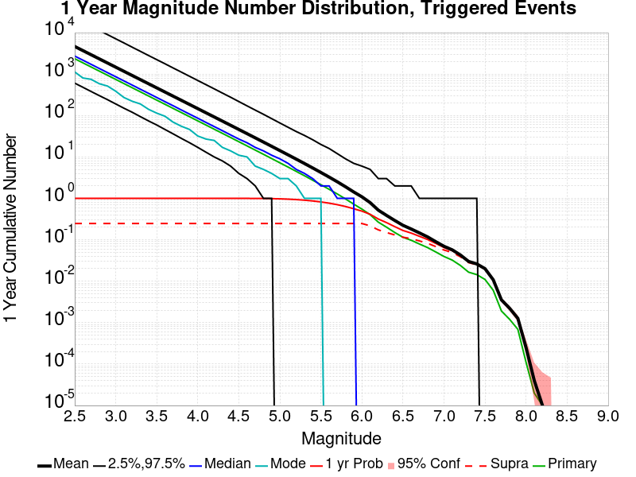
| Mag | Mean | 2.5 %ile | 97.5 %ile | Median | Mode | 1 yr Probability | 1 yr Supra-Seis Prob | Primary Aftershocks Mean |
|---|---|---|---|---|---|---|---|---|
| M≥2.5 | 4643.344 | 605.000 | 22522.000 | 2725.000 | 1128.000 | 1.000 (100.00%) | 0.247 (24.73%) | 2351.502 |
| M≥2.6 | 3688.239 | 480.000 | 17897.000 | 2164.000 | 805.000 | 1.000 (100.00%) | 0.247 (24.73%) | 1867.807 |
| M≥2.7 | 2929.704 | 380.000 | 14225.000 | 1719.000 | 747.000 | 1.000 (100.00%) | 0.247 (24.73%) | 1483.675 |
| M≥2.8 | 2327.081 | 302.000 | 11301.000 | 1365.000 | 585.000 | 1.000 (100.00%) | 0.247 (24.73%) | 1178.471 |
| M≥2.9 | 1848.328 | 241.000 | 8956.000 | 1084.000 | 514.000 | 1.000 (100.00%) | 0.247 (24.73%) | 935.987 |
| M≥3 | 1468.066 | 190.000 | 7104.000 | 862.000 | 386.000 | 1.000 (100.00%) | 0.247 (24.73%) | 743.393 |
| M≥3.1 | 1166.015 | 150.000 | 5644.000 | 684.000 | 272.000 | 1.000 (100.00%) | 0.247 (24.73%) | 590.448 |
| M≥3.2 | 926.192 | 120.000 | 4465.000 | 544.000 | 221.000 | 1.000 (100.00%) | 0.247 (24.73%) | 468.979 |
| M≥3.3 | 735.564 | 94.000 | 3544.000 | 431.000 | 190.000 | 1.000 (100.00%) | 0.247 (24.73%) | 372.448 |
| M≥3.4 | 584.221 | 74.000 | 2806.000 | 343.000 | 141.000 | 1.000 (100.00%) | 0.247 (24.73%) | 295.816 |
| M≥3.5 | 463.991 | 59.000 | 2232.000 | 272.000 | 114.000 | 1.000 (100.00%) | 0.247 (24.73%) | 234.926 |
| M≥3.6 | 368.473 | 46.000 | 1774.000 | 216.000 | 96.000 | 1.000 (100.00%) | 0.247 (24.73%) | 186.552 |
| M≥3.7 | 292.620 | 36.000 | 1403.000 | 172.000 | 69.000 | 1.000 (100.00%) | 0.247 (24.73%) | 148.151 |
| M≥3.8 | 232.375 | 28.000 | 1114.000 | 136.000 | 55.000 | 1.000 (100.00%) | 0.247 (24.73%) | 117.672 |
| M≥3.9 | 184.483 | 22.000 | 883.000 | 108.000 | 46.000 | 1.000 (100.00%) | 0.247 (24.73%) | 93.420 |
| M≥4 | 146.431 | 17.000 | 700.000 | 86.000 | 32.000 | 1.000 (100.00%) | 0.247 (24.73%) | 74.147 |
| M≥4.1 | 116.213 | 13.000 | 555.000 | 68.000 | 27.000 | 1.000 (100.00%) | 0.247 (24.73%) | 58.837 |
| M≥4.2 | 92.245 | 10.000 | 440.000 | 54.000 | 25.000 | 1.000 (100.00%) | 0.247 (24.73%) | 46.710 |
| M≥4.3 | 73.203 | 8.000 | 348.000 | 43.000 | 17.000 | 1.000 (99.99%) | 0.247 (24.73%) | 37.074 |
| M≥4.4 | 58.056 | 6.000 | 276.000 | 34.000 | 14.000 | 1.000 (99.97%) | 0.247 (24.73%) | 29.405 |
| M≥4.5 | 46.028 | 4.000 | 217.000 | 27.000 | 11.000 | 0.999 (99.92%) | 0.247 (24.73%) | 23.313 |
| M≥4.6 | 36.459 | 3.000 | 171.000 | 22.000 | 10.000 | 0.998 (99.82%) | 0.247 (24.73%) | 18.464 |
| M≥4.7 | 28.873 | 2.000 | 135.000 | 17.000 | 6.000 | 0.996 (99.62%) | 0.247 (24.73%) | 14.627 |
| M≥4.8 | 22.846 | 1.000 | 107.000 | 14.000 | 5.000 | 0.992 (99.20%) | 0.247 (24.73%) | 11.572 |
| M≥4.9 | 18.044 | 1.000 | 84.000 | 11.000 | 4.000 | 0.985 (98.52%) | 0.247 (24.73%) | 9.145 |
| M≥5 | 14.234 | 0.000 | 66.000 | 9.000 | 3.000 | 0.974 (97.40%) | 0.247 (24.73%) | 7.215 |
| M≥5.1 | 11.227 | 0.000 | 52.000 | 7.000 | 3.000 | 0.957 (95.71%) | 0.247 (24.73%) | 5.693 |
| M≥5.2 | 8.836 | 0.000 | 41.000 | 5.000 | 2.000 | 0.934 (93.40%) | 0.247 (24.73%) | 4.476 |
| M≥5.3 | 6.935 | 0.000 | 33.000 | 4.000 | 1.000 | 0.904 (90.42%) | 0.247 (24.73%) | 3.514 |
| M≥5.4 | 5.420 | 0.000 | 26.000 | 3.000 | 1.000 | 0.866 (86.60%) | 0.247 (24.73%) | 2.743 |
| M≥5.5 | 4.217 | 0.000 | 20.000 | 2.000 | 1.000 | 0.820 (81.99%) | 0.247 (24.73%) | 2.137 |
| M≥5.6 | 3.266 | 0.000 | 16.000 | 2.000 | 0.000 | 0.766 (76.59%) | 0.247 (24.73%) | 1.656 |
| M≥5.7 | 2.512 | 0.000 | 12.000 | 1.000 | 0.000 | 0.704 (70.41%) | 0.247 (24.73%) | 1.277 |
| M≥5.8 | 1.904 | 0.000 | 9.000 | 1.000 | 0.000 | 0.636 (63.58%) | 0.247 (24.73%) | 0.968 |
| M≥5.9 | 1.426 | 0.000 | 7.000 | 1.000 | 0.000 | 0.562 (56.16%) | 0.247 (24.73%) | 0.725 |
| M≥6 | 1.090 | 0.000 | 6.000 | 0.000 | 0.000 | 0.492 (49.21%) | 0.247 (24.72%) | 0.551 |
| M≥6.1 | 0.789 | 0.000 | 5.000 | 0.000 | 0.000 | 0.413 (41.25%) | 0.217 (21.69%) | 0.404 |
| M≥6.2 | 0.518 | 0.000 | 3.000 | 0.000 | 0.000 | 0.317 (31.72%) | 0.174 (17.36%) | 0.266 |
| M≥6.3 | 0.387 | 0.000 | 3.000 | 0.000 | 0.000 | 0.260 (25.97%) | 0.150 (14.97%) | 0.201 |
| M≥6.4 | 0.292 | 0.000 | 2.000 | 0.000 | 0.000 | 0.208 (20.76%) | 0.131 (13.09%) | 0.150 |
| M≥6.5 | 0.224 | 0.000 | 2.000 | 0.000 | 0.000 | 0.168 (16.78%) | 0.115 (11.53%) | 0.115 |
| M≥6.6 | 0.182 | 0.000 | 2.000 | 0.000 | 0.000 | 0.145 (14.53%) | 0.107 (10.68%) | 0.097 |
| M≥6.7 | 0.147 | 0.000 | 1.000 | 0.000 | 0.000 | 0.122 (12.16%) | 0.094 (9.39%) | 0.079 |
| M≥6.8 | 0.117 | 0.000 | 1.000 | 0.000 | 0.000 | 0.102 (10.18%) | 0.082 (8.25%) | 0.065 |
| M≥6.9 | 0.090 | 0.000 | 1.000 | 0.000 | 0.000 | 0.082 (8.18%) | 0.069 (6.85%) | 0.051 |
| M≥7 | 0.070 | 0.000 | 1.000 | 0.000 | 0.000 | 0.065 (6.51%) | 0.057 (5.66%) | 0.040 |
| M≥7.1 | 0.057 | 0.000 | 1.000 | 0.000 | 0.000 | 0.055 (5.46%) | 0.050 (4.96%) | 0.032 |
| M≥7.2 | 0.043 | 0.000 | 1.000 | 0.000 | 0.000 | 0.042 (4.17%) | 0.039 (3.89%) | 0.024 |
| M≥7.3 | 0.030 | 0.000 | 1.000 | 0.000 | 0.000 | 0.029 (2.94%) | 0.028 (2.80%) | 0.017 |
| M≥7.4 | 0.026 | 0.000 | 1.000 | 0.000 | 0.000 | 0.026 (2.57%) | 0.025 (2.51%) | 0.014 |
| M≥7.5 | 0.020 | 0.000 | 0.000 | 0.000 | 0.000 | 0.020 (1.98%) | 0.020 (1.96%) | 0.011 |
| M≥7.6 | 0.011 | 0.000 | 0.000 | 0.000 | 0.000 | 0.011 (1.07%) | 0.011 (1.06%) | 6.04E-3 |
| M≥7.7 | 3.54E-3 | 0.000 | 0.000 | 0.000 | 0.000 | 3.52E-3 (0.35%) | 3.51E-3 (0.35%) | 1.91E-3 |
| M≥7.8 | 2.22E-3 | 0.000 | 0.000 | 0.000 | 0.000 | 2.22E-3 (0.22%) | 2.22E-3 (0.22%) | 1.20E-3 |
| M≥7.9 | 1.27E-3 | 0.000 | 0.000 | 0.000 | 0.000 | 1.27E-3 (0.13%) | 1.27E-3 (0.13%) | 6.90E-4 |
| M≥8 | 2.50E-4 | 0.000 | 0.000 | 0.000 | 0.000 | 2.50E-4 (0.03%) | 2.50E-4 (0.03%) | 1.10E-4 |
| M≥8.1 | 4.00E-5 | 0.000 | 0.000 | 0.000 | 0.000 | 4.00E-5 (0.00%) | 4.00E-5 (0.00%) | 2.00E-5 |
| M≥8.2 | 1.00E-5 | 0.000 | 0.000 | 0.000 | 0.000 | 1.00E-5 (0.00%) | 1.00E-5 (0.00%) | 1.00E-5 |
| M≥8.3 | 0.000 | 0.000 | 0.000 | 0.000 | 0.000 | 0.000 (0.00%) | 0.000 (0.00%) | 0.000 |
| M≥8.4 | 0.000 | 0.000 | 0.000 | 0.000 | 0.000 | 0.000 (0.00%) | 0.000 (0.00%) | 0.000 |
| M≥8.5 | 0.000 | 0.000 | 0.000 | 0.000 | 0.000 | 0.000 (0.00%) | 0.000 (0.00%) | 0.000 |
| M≥8.6 | 0.000 | 0.000 | 0.000 | 0.000 | 0.000 | 0.000 (0.00%) | 0.000 (0.00%) | 0.000 |
| M≥8.7 | 0.000 | 0.000 | 0.000 | 0.000 | 0.000 | 0.000 (0.00%) | 0.000 (0.00%) | 0.000 |
| M≥8.8 | 0.000 | 0.000 | 0.000 | 0.000 | 0.000 | 0.000 (0.00%) | 0.000 (0.00%) | 0.000 |
| M≥8.9 | 0.000 | 0.000 | 0.000 | 0.000 | 0.000 | 0.000 (0.00%) | 0.000 (0.00%) | 0.000 |
| M≥9 | 0.000 | 0.000 | 0.000 | 0.000 | 0.000 | 0.000 (0.00%) | 0.000 (0.00%) | 0.000 |
Legend

| Mag | Mean | 2.5 %ile | 97.5 %ile | Median | Mode | 1 mo Probability | 1 mo Supra-Seis Prob | Primary Aftershocks Mean |
|---|---|---|---|---|---|---|---|---|
| M≥2.5 | 3231.480 | 377.000 | 15033.000 | 1892.000 | 740.000 | 1.000 (100.00%) | 0.190 (18.96%) | 1906.803 |
| M≥2.6 | 2566.793 | 299.000 | 11941.000 | 1502.000 | 603.000 | 1.000 (100.00%) | 0.190 (18.96%) | 1514.594 |
| M≥2.7 | 2038.882 | 239.000 | 9483.000 | 1195.000 | 487.000 | 1.000 (100.00%) | 0.190 (18.96%) | 1203.125 |
| M≥2.8 | 1619.495 | 191.000 | 7525.000 | 949.000 | 382.000 | 1.000 (100.00%) | 0.190 (18.96%) | 955.609 |
| M≥2.9 | 1286.313 | 152.000 | 5973.000 | 755.000 | 300.000 | 1.000 (100.00%) | 0.190 (18.96%) | 758.992 |
| M≥3 | 1021.644 | 122.000 | 4749.000 | 599.000 | 248.000 | 1.000 (100.00%) | 0.190 (18.96%) | 602.797 |
| M≥3.1 | 811.423 | 98.000 | 3775.000 | 477.000 | 170.000 | 1.000 (100.00%) | 0.190 (18.96%) | 478.767 |
| M≥3.2 | 644.526 | 78.000 | 2994.000 | 379.000 | 152.000 | 1.000 (100.00%) | 0.190 (18.96%) | 380.270 |
| M≥3.3 | 511.880 | 62.000 | 2383.000 | 301.000 | 119.000 | 1.000 (100.00%) | 0.190 (18.96%) | 302.009 |
| M≥3.4 | 406.563 | 49.000 | 1888.000 | 239.000 | 90.000 | 1.000 (100.00%) | 0.190 (18.96%) | 239.870 |
| M≥3.5 | 322.881 | 38.000 | 1504.000 | 190.000 | 75.000 | 1.000 (100.00%) | 0.190 (18.96%) | 190.484 |
| M≥3.6 | 256.411 | 30.000 | 1199.000 | 151.000 | 62.000 | 1.000 (100.00%) | 0.190 (18.96%) | 151.266 |
| M≥3.7 | 203.610 | 24.000 | 950.000 | 120.000 | 41.000 | 1.000 (100.00%) | 0.190 (18.96%) | 120.122 |
| M≥3.8 | 161.695 | 18.000 | 755.000 | 95.000 | 32.000 | 1.000 (100.00%) | 0.190 (18.96%) | 95.408 |
| M≥3.9 | 128.371 | 14.000 | 600.000 | 76.000 | 29.000 | 1.000 (100.00%) | 0.190 (18.96%) | 75.736 |
| M≥4 | 101.902 | 11.000 | 475.000 | 60.000 | 22.000 | 1.000 (100.00%) | 0.190 (18.96%) | 60.119 |
| M≥4.1 | 80.869 | 8.000 | 378.000 | 48.000 | 17.000 | 1.000 (100.00%) | 0.190 (18.96%) | 47.713 |
| M≥4.2 | 64.201 | 6.000 | 300.000 | 38.000 | 14.000 | 1.000 (99.98%) | 0.190 (18.96%) | 37.880 |
| M≥4.3 | 50.949 | 5.000 | 239.000 | 30.000 | 11.000 | 0.999 (99.94%) | 0.190 (18.96%) | 30.059 |
| M≥4.4 | 40.404 | 3.000 | 189.000 | 24.000 | 8.000 | 0.999 (99.87%) | 0.190 (18.96%) | 23.839 |
| M≥4.5 | 32.033 | 2.000 | 149.000 | 19.000 | 7.000 | 0.997 (99.70%) | 0.190 (18.96%) | 18.896 |
| M≥4.6 | 25.375 | 2.000 | 118.000 | 15.000 | 5.000 | 0.994 (99.40%) | 0.190 (18.96%) | 14.963 |
| M≥4.7 | 20.095 | 1.000 | 93.000 | 12.000 | 5.000 | 0.989 (98.89%) | 0.190 (18.96%) | 11.852 |
| M≥4.8 | 15.899 | 1.000 | 74.000 | 10.000 | 4.000 | 0.980 (98.00%) | 0.190 (18.96%) | 9.377 |
| M≥4.9 | 12.561 | 0.000 | 58.000 | 8.000 | 2.000 | 0.967 (96.72%) | 0.190 (18.96%) | 7.411 |
| M≥5 | 9.909 | 0.000 | 46.000 | 6.000 | 2.000 | 0.948 (94.82%) | 0.190 (18.96%) | 5.847 |
| M≥5.1 | 7.819 | 0.000 | 36.000 | 5.000 | 2.000 | 0.922 (92.20%) | 0.190 (18.96%) | 4.614 |
| M≥5.2 | 6.154 | 0.000 | 29.000 | 4.000 | 1.000 | 0.889 (88.91%) | 0.190 (18.96%) | 3.629 |
| M≥5.3 | 4.835 | 0.000 | 23.000 | 3.000 | 1.000 | 0.849 (84.86%) | 0.190 (18.96%) | 2.850 |
| M≥5.4 | 3.780 | 0.000 | 18.000 | 2.000 | 0.000 | 0.800 (79.99%) | 0.190 (18.96%) | 2.225 |
| M≥5.5 | 2.938 | 0.000 | 14.000 | 2.000 | 0.000 | 0.745 (74.53%) | 0.190 (18.96%) | 1.732 |
| M≥5.6 | 2.279 | 0.000 | 11.000 | 1.000 | 0.000 | 0.684 (68.37%) | 0.190 (18.96%) | 1.343 |
| M≥5.7 | 1.754 | 0.000 | 9.000 | 1.000 | 0.000 | 0.617 (61.69%) | 0.190 (18.96%) | 1.035 |
| M≥5.8 | 1.331 | 0.000 | 7.000 | 1.000 | 0.000 | 0.546 (54.58%) | 0.190 (18.96%) | 0.785 |
| M≥5.9 | 0.996 | 0.000 | 5.000 | 0.000 | 0.000 | 0.471 (47.09%) | 0.190 (18.96%) | 0.588 |
| M≥6 | 0.758 | 0.000 | 4.000 | 0.000 | 0.000 | 0.403 (40.34%) | 0.190 (18.95%) | 0.445 |
| M≥6.1 | 0.551 | 0.000 | 3.000 | 0.000 | 0.000 | 0.331 (33.14%) | 0.166 (16.64%) | 0.327 |
| M≥6.2 | 0.362 | 0.000 | 3.000 | 0.000 | 0.000 | 0.248 (24.80%) | 0.132 (13.17%) | 0.215 |
| M≥6.3 | 0.271 | 0.000 | 2.000 | 0.000 | 0.000 | 0.200 (20.04%) | 0.114 (11.37%) | 0.164 |
| M≥6.4 | 0.205 | 0.000 | 2.000 | 0.000 | 0.000 | 0.158 (15.82%) | 0.099 (9.93%) | 0.122 |
| M≥6.5 | 0.157 | 0.000 | 1.000 | 0.000 | 0.000 | 0.127 (12.73%) | 0.088 (8.77%) | 0.094 |
| M≥6.6 | 0.130 | 0.000 | 1.000 | 0.000 | 0.000 | 0.110 (11.00%) | 0.081 (8.12%) | 0.080 |
| M≥6.7 | 0.104 | 0.000 | 1.000 | 0.000 | 0.000 | 0.091 (9.14%) | 0.071 (7.12%) | 0.065 |
| M≥6.8 | 0.084 | 0.000 | 1.000 | 0.000 | 0.000 | 0.076 (7.60%) | 0.062 (6.21%) | 0.053 |
| M≥6.9 | 0.065 | 0.000 | 1.000 | 0.000 | 0.000 | 0.061 (6.08%) | 0.051 (5.14%) | 0.042 |
| M≥7 | 0.051 | 0.000 | 1.000 | 0.000 | 0.000 | 0.048 (4.83%) | 0.042 (4.23%) | 0.033 |
| M≥7.1 | 0.042 | 0.000 | 1.000 | 0.000 | 0.000 | 0.040 (4.05%) | 0.037 (3.71%) | 0.027 |
| M≥7.2 | 0.032 | 0.000 | 1.000 | 0.000 | 0.000 | 0.031 (3.09%) | 0.029 (2.90%) | 0.020 |
| M≥7.3 | 0.022 | 0.000 | 0.000 | 0.000 | 0.000 | 0.022 (2.18%) | 0.021 (2.09%) | 0.014 |
| M≥7.4 | 0.019 | 0.000 | 0.000 | 0.000 | 0.000 | 0.019 (1.90%) | 0.019 (1.87%) | 0.012 |
| M≥7.5 | 0.015 | 0.000 | 0.000 | 0.000 | 0.000 | 0.015 (1.49%) | 0.015 (1.48%) | 9.37E-3 |
| M≥7.6 | 8.23E-3 | 0.000 | 0.000 | 0.000 | 0.000 | 8.14E-3 (0.81%) | 8.10E-3 (0.81%) | 5.12E-3 |
| M≥7.7 | 2.69E-3 | 0.000 | 0.000 | 0.000 | 0.000 | 2.68E-3 (0.27%) | 2.67E-3 (0.27%) | 1.63E-3 |
| M≥7.8 | 1.64E-3 | 0.000 | 0.000 | 0.000 | 0.000 | 1.64E-3 (0.16%) | 1.64E-3 (0.16%) | 1.02E-3 |
| M≥7.9 | 9.40E-4 | 0.000 | 0.000 | 0.000 | 0.000 | 9.40E-4 (0.09%) | 9.40E-4 (0.09%) | 6.00E-4 |
| M≥8 | 2.10E-4 | 0.000 | 0.000 | 0.000 | 0.000 | 2.10E-4 (0.02%) | 2.10E-4 (0.02%) | 1.00E-4 |
| M≥8.1 | 4.00E-5 | 0.000 | 0.000 | 0.000 | 0.000 | 4.00E-5 (0.00%) | 4.00E-5 (0.00%) | 2.00E-5 |
| M≥8.2 | 1.00E-5 | 0.000 | 0.000 | 0.000 | 0.000 | 1.00E-5 (0.00%) | 1.00E-5 (0.00%) | 1.00E-5 |
| M≥8.3 | 0.000 | 0.000 | 0.000 | 0.000 | 0.000 | 0.000 (0.00%) | 0.000 (0.00%) | 0.000 |
| M≥8.4 | 0.000 | 0.000 | 0.000 | 0.000 | 0.000 | 0.000 (0.00%) | 0.000 (0.00%) | 0.000 |
| M≥8.5 | 0.000 | 0.000 | 0.000 | 0.000 | 0.000 | 0.000 (0.00%) | 0.000 (0.00%) | 0.000 |
| M≥8.6 | 0.000 | 0.000 | 0.000 | 0.000 | 0.000 | 0.000 (0.00%) | 0.000 (0.00%) | 0.000 |
| M≥8.7 | 0.000 | 0.000 | 0.000 | 0.000 | 0.000 | 0.000 (0.00%) | 0.000 (0.00%) | 0.000 |
| M≥8.8 | 0.000 | 0.000 | 0.000 | 0.000 | 0.000 | 0.000 (0.00%) | 0.000 (0.00%) | 0.000 |
| M≥8.9 | 0.000 | 0.000 | 0.000 | 0.000 | 0.000 | 0.000 (0.00%) | 0.000 (0.00%) | 0.000 |
| M≥9 | 0.000 | 0.000 | 0.000 | 0.000 | 0.000 | 0.000 (0.00%) | 0.000 (0.00%) | 0.000 |
Legend

| Mag | Mean | 2.5 %ile | 97.5 %ile | Median | Mode | 1 wk Probability | 1 wk Supra-Seis Prob | Primary Aftershocks Mean |
|---|---|---|---|---|---|---|---|---|
| M≥2.5 | 2494.993 | 262.000 | 11013.000 | 1450.000 | 562.000 | 1.000 (100.00%) | 0.156 (15.57%) | 1614.810 |
| M≥2.6 | 1981.825 | 210.000 | 8756.000 | 1152.000 | 426.000 | 1.000 (100.00%) | 0.156 (15.57%) | 1282.675 |
| M≥2.7 | 1574.260 | 167.000 | 6962.000 | 916.000 | 336.000 | 1.000 (100.00%) | 0.156 (15.57%) | 1018.912 |
| M≥2.8 | 1250.422 | 133.000 | 5531.000 | 728.000 | 273.000 | 1.000 (100.00%) | 0.156 (15.57%) | 809.300 |
| M≥2.9 | 993.173 | 107.000 | 4388.000 | 578.000 | 221.000 | 1.000 (100.00%) | 0.156 (15.57%) | 642.795 |
| M≥3 | 788.822 | 85.000 | 3489.000 | 459.000 | 182.000 | 1.000 (100.00%) | 0.156 (15.57%) | 510.518 |
| M≥3.1 | 626.519 | 68.000 | 2771.000 | 365.000 | 144.000 | 1.000 (100.00%) | 0.156 (15.57%) | 405.507 |
| M≥3.2 | 497.652 | 54.000 | 2201.000 | 290.000 | 112.000 | 1.000 (100.00%) | 0.156 (15.57%) | 322.077 |
| M≥3.3 | 395.231 | 43.000 | 1749.000 | 231.000 | 85.000 | 1.000 (100.00%) | 0.156 (15.57%) | 255.792 |
| M≥3.4 | 313.911 | 34.000 | 1389.000 | 184.000 | 66.000 | 1.000 (100.00%) | 0.156 (15.57%) | 203.160 |
| M≥3.5 | 249.307 | 27.000 | 1106.000 | 146.000 | 56.000 | 1.000 (100.00%) | 0.156 (15.57%) | 161.337 |
| M≥3.6 | 197.987 | 21.000 | 880.000 | 116.000 | 40.000 | 1.000 (100.00%) | 0.156 (15.57%) | 128.120 |
| M≥3.7 | 157.221 | 16.000 | 700.000 | 92.000 | 29.000 | 1.000 (100.00%) | 0.156 (15.57%) | 101.749 |
| M≥3.8 | 124.860 | 13.000 | 558.000 | 73.000 | 24.000 | 1.000 (100.00%) | 0.156 (15.57%) | 80.811 |
| M≥3.9 | 99.122 | 10.000 | 445.000 | 58.000 | 22.000 | 1.000 (100.00%) | 0.156 (15.57%) | 64.154 |
| M≥4 | 78.684 | 7.000 | 355.000 | 46.000 | 20.000 | 1.000 (100.00%) | 0.156 (15.57%) | 50.922 |
| M≥4.1 | 62.445 | 6.000 | 281.000 | 37.000 | 16.000 | 1.000 (99.97%) | 0.156 (15.57%) | 40.409 |
| M≥4.2 | 49.572 | 4.000 | 225.000 | 29.000 | 10.000 | 0.999 (99.94%) | 0.156 (15.57%) | 32.076 |
| M≥4.3 | 39.334 | 3.000 | 179.000 | 23.000 | 10.000 | 0.998 (99.83%) | 0.156 (15.57%) | 25.452 |
| M≥4.4 | 31.191 | 2.000 | 142.000 | 19.000 | 7.000 | 0.996 (99.62%) | 0.156 (15.57%) | 20.186 |
| M≥4.5 | 24.727 | 2.000 | 113.000 | 15.000 | 6.000 | 0.992 (99.24%) | 0.156 (15.57%) | 16.000 |
| M≥4.6 | 19.587 | 1.000 | 90.000 | 12.000 | 5.000 | 0.987 (98.70%) | 0.156 (15.57%) | 12.668 |
| M≥4.7 | 15.512 | 1.000 | 71.000 | 9.000 | 4.000 | 0.977 (97.72%) | 0.156 (15.57%) | 10.034 |
| M≥4.8 | 12.273 | 0.000 | 56.000 | 7.000 | 2.000 | 0.963 (96.30%) | 0.156 (15.57%) | 7.937 |
| M≥4.9 | 9.700 | 0.000 | 45.000 | 6.000 | 2.000 | 0.944 (94.36%) | 0.156 (15.57%) | 6.274 |
| M≥5 | 7.653 | 0.000 | 35.000 | 5.000 | 1.000 | 0.917 (91.73%) | 0.156 (15.57%) | 4.950 |
| M≥5.1 | 6.041 | 0.000 | 28.000 | 4.000 | 1.000 | 0.884 (88.38%) | 0.156 (15.57%) | 3.908 |
| M≥5.2 | 4.752 | 0.000 | 22.000 | 3.000 | 1.000 | 0.843 (84.31%) | 0.156 (15.57%) | 3.073 |
| M≥5.3 | 3.734 | 0.000 | 18.000 | 2.000 | 0.000 | 0.796 (79.60%) | 0.156 (15.57%) | 2.414 |
| M≥5.4 | 2.921 | 0.000 | 14.000 | 2.000 | 0.000 | 0.742 (74.23%) | 0.156 (15.57%) | 1.884 |
| M≥5.5 | 2.270 | 0.000 | 11.000 | 1.000 | 0.000 | 0.683 (68.34%) | 0.156 (15.57%) | 1.465 |
| M≥5.6 | 1.761 | 0.000 | 9.000 | 1.000 | 0.000 | 0.618 (61.84%) | 0.156 (15.57%) | 1.136 |
| M≥5.7 | 1.355 | 0.000 | 7.000 | 1.000 | 0.000 | 0.551 (55.06%) | 0.156 (15.57%) | 0.875 |
| M≥5.8 | 1.029 | 0.000 | 6.000 | 0.000 | 0.000 | 0.481 (48.08%) | 0.156 (15.57%) | 0.664 |
| M≥5.9 | 0.769 | 0.000 | 4.000 | 0.000 | 0.000 | 0.408 (40.84%) | 0.156 (15.56%) | 0.498 |
| M≥6 | 0.585 | 0.000 | 4.000 | 0.000 | 0.000 | 0.345 (34.47%) | 0.156 (15.55%) | 0.376 |
| M≥6.1 | 0.424 | 0.000 | 3.000 | 0.000 | 0.000 | 0.279 (27.93%) | 0.137 (13.67%) | 0.276 |
| M≥6.2 | 0.278 | 0.000 | 2.000 | 0.000 | 0.000 | 0.204 (20.42%) | 0.107 (10.74%) | 0.181 |
| M≥6.3 | 0.210 | 0.000 | 2.000 | 0.000 | 0.000 | 0.164 (16.37%) | 0.093 (9.30%) | 0.138 |
| M≥6.4 | 0.158 | 0.000 | 1.000 | 0.000 | 0.000 | 0.128 (12.82%) | 0.081 (8.09%) | 0.103 |
| M≥6.5 | 0.122 | 0.000 | 1.000 | 0.000 | 0.000 | 0.102 (10.22%) | 0.071 (7.13%) | 0.080 |
| M≥6.6 | 0.101 | 0.000 | 1.000 | 0.000 | 0.000 | 0.088 (8.85%) | 0.066 (6.63%) | 0.068 |
| M≥6.7 | 0.082 | 0.000 | 1.000 | 0.000 | 0.000 | 0.073 (7.32%) | 0.058 (5.79%) | 0.055 |
| M≥6.8 | 0.066 | 0.000 | 1.000 | 0.000 | 0.000 | 0.061 (6.09%) | 0.050 (5.04%) | 0.046 |
| M≥6.9 | 0.052 | 0.000 | 1.000 | 0.000 | 0.000 | 0.049 (4.88%) | 0.042 (4.18%) | 0.036 |
| M≥7 | 0.040 | 0.000 | 1.000 | 0.000 | 0.000 | 0.039 (3.86%) | 0.034 (3.43%) | 0.028 |
| M≥7.1 | 0.033 | 0.000 | 1.000 | 0.000 | 0.000 | 0.032 (3.24%) | 0.030 (2.99%) | 0.023 |
| M≥7.2 | 0.025 | 0.000 | 0.000 | 0.000 | 0.000 | 0.025 (2.47%) | 0.023 (2.33%) | 0.017 |
| M≥7.3 | 0.018 | 0.000 | 0.000 | 0.000 | 0.000 | 0.017 (1.73%) | 0.017 (1.67%) | 0.012 |
| M≥7.4 | 0.015 | 0.000 | 0.000 | 0.000 | 0.000 | 0.015 (1.50%) | 0.015 (1.48%) | 0.010 |
| M≥7.5 | 0.012 | 0.000 | 0.000 | 0.000 | 0.000 | 0.012 (1.17%) | 0.012 (1.16%) | 8.06E-3 |
| M≥7.6 | 6.43E-3 | 0.000 | 0.000 | 0.000 | 0.000 | 6.38E-3 (0.64%) | 6.36E-3 (0.64%) | 4.45E-3 |
| M≥7.7 | 2.08E-3 | 0.000 | 0.000 | 0.000 | 0.000 | 2.08E-3 (0.21%) | 2.07E-3 (0.21%) | 1.48E-3 |
| M≥7.8 | 1.27E-3 | 0.000 | 0.000 | 0.000 | 0.000 | 1.27E-3 (0.13%) | 1.27E-3 (0.13%) | 9.30E-4 |
| M≥7.9 | 7.00E-4 | 0.000 | 0.000 | 0.000 | 0.000 | 7.00E-4 (0.07%) | 7.00E-4 (0.07%) | 5.40E-4 |
| M≥8 | 1.60E-4 | 0.000 | 0.000 | 0.000 | 0.000 | 1.60E-4 (0.02%) | 1.60E-4 (0.02%) | 1.00E-4 |
| M≥8.1 | 3.00E-5 | 0.000 | 0.000 | 0.000 | 0.000 | 3.00E-5 (0.00%) | 3.00E-5 (0.00%) | 2.00E-5 |
| M≥8.2 | 1.00E-5 | 0.000 | 0.000 | 0.000 | 0.000 | 1.00E-5 (0.00%) | 1.00E-5 (0.00%) | 1.00E-5 |
| M≥8.3 | 0.000 | 0.000 | 0.000 | 0.000 | 0.000 | 0.000 (0.00%) | 0.000 (0.00%) | 0.000 |
| M≥8.4 | 0.000 | 0.000 | 0.000 | 0.000 | 0.000 | 0.000 (0.00%) | 0.000 (0.00%) | 0.000 |
| M≥8.5 | 0.000 | 0.000 | 0.000 | 0.000 | 0.000 | 0.000 (0.00%) | 0.000 (0.00%) | 0.000 |
| M≥8.6 | 0.000 | 0.000 | 0.000 | 0.000 | 0.000 | 0.000 (0.00%) | 0.000 (0.00%) | 0.000 |
| M≥8.7 | 0.000 | 0.000 | 0.000 | 0.000 | 0.000 | 0.000 (0.00%) | 0.000 (0.00%) | 0.000 |
| M≥8.8 | 0.000 | 0.000 | 0.000 | 0.000 | 0.000 | 0.000 (0.00%) | 0.000 (0.00%) | 0.000 |
| M≥8.9 | 0.000 | 0.000 | 0.000 | 0.000 | 0.000 | 0.000 (0.00%) | 0.000 (0.00%) | 0.000 |
| M≥9 | 0.000 | 0.000 | 0.000 | 0.000 | 0.000 | 0.000 (0.00%) | 0.000 (0.00%) | 0.000 |
Legend
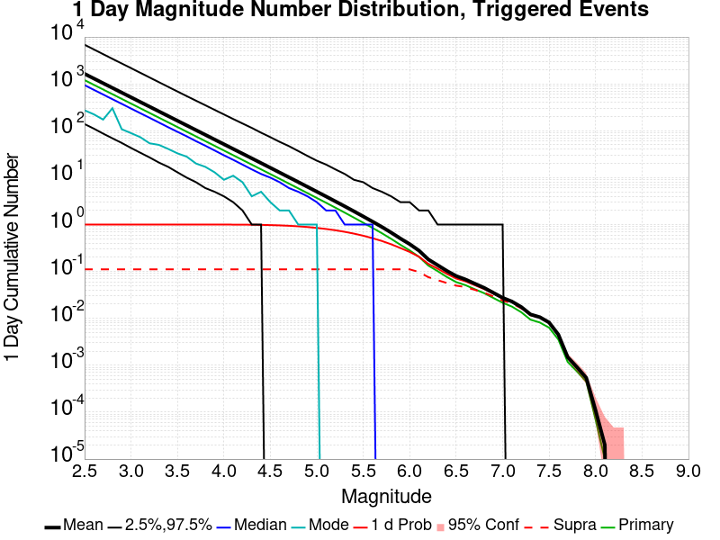
| Mag | Mean | 2.5 %ile | 97.5 %ile | Median | Mode | 1 d Probability | 1 d Supra-Seis Prob | Primary Aftershocks Mean |
|---|---|---|---|---|---|---|---|---|
| M≥2.5 | 1636.159 | 139.000 | 6820.000 | 939.000 | 273.000 | 1.000 (100.00%) | 0.111 (11.08%) | 1201.675 |
| M≥2.6 | 1299.628 | 111.000 | 5421.000 | 746.000 | 224.000 | 1.000 (100.00%) | 0.111 (11.08%) | 954.510 |
| M≥2.7 | 1032.369 | 87.000 | 4301.000 | 593.000 | 173.000 | 1.000 (100.00%) | 0.111 (11.08%) | 758.237 |
| M≥2.8 | 819.991 | 69.000 | 3415.000 | 471.000 | 302.000 | 1.000 (100.00%) | 0.111 (11.08%) | 602.234 |
| M≥2.9 | 651.288 | 55.000 | 2721.000 | 375.000 | 108.000 | 1.000 (100.00%) | 0.111 (11.08%) | 478.335 |
| M≥3 | 517.289 | 43.000 | 2167.000 | 298.000 | 89.000 | 1.000 (100.00%) | 0.111 (11.08%) | 379.913 |
| M≥3.1 | 410.911 | 34.000 | 1721.000 | 237.000 | 73.000 | 1.000 (100.00%) | 0.111 (11.08%) | 301.797 |
| M≥3.2 | 326.375 | 27.000 | 1369.000 | 189.000 | 54.000 | 1.000 (100.00%) | 0.111 (11.08%) | 239.698 |
| M≥3.3 | 259.203 | 21.000 | 1087.000 | 150.000 | 50.000 | 1.000 (100.00%) | 0.111 (11.08%) | 190.364 |
| M≥3.4 | 205.899 | 17.000 | 865.000 | 119.000 | 41.000 | 1.000 (100.00%) | 0.111 (11.08%) | 151.219 |
| M≥3.5 | 163.528 | 13.000 | 688.000 | 95.000 | 33.000 | 1.000 (100.00%) | 0.111 (11.08%) | 120.092 |
| M≥3.6 | 129.867 | 10.000 | 548.000 | 76.000 | 28.000 | 1.000 (100.00%) | 0.111 (11.08%) | 95.371 |
| M≥3.7 | 103.126 | 8.000 | 437.000 | 60.000 | 20.000 | 1.000 (100.00%) | 0.111 (11.08%) | 75.733 |
| M≥3.8 | 81.914 | 6.000 | 350.000 | 48.000 | 17.000 | 1.000 (99.99%) | 0.111 (11.08%) | 60.155 |
| M≥3.9 | 65.033 | 5.000 | 279.000 | 38.000 | 13.000 | 1.000 (99.95%) | 0.111 (11.08%) | 47.758 |
| M≥4 | 51.630 | 4.000 | 223.000 | 30.000 | 9.000 | 0.999 (99.88%) | 0.111 (11.08%) | 37.909 |
| M≥4.1 | 40.979 | 3.000 | 178.000 | 24.000 | 11.000 | 0.997 (99.73%) | 0.111 (11.08%) | 30.091 |
| M≥4.2 | 32.535 | 2.000 | 143.000 | 19.000 | 8.000 | 0.995 (99.48%) | 0.111 (11.08%) | 23.889 |
| M≥4.3 | 25.811 | 1.000 | 115.000 | 15.000 | 4.000 | 0.991 (99.06%) | 0.111 (11.08%) | 18.950 |
| M≥4.4 | 20.468 | 1.000 | 91.000 | 12.000 | 5.000 | 0.984 (98.38%) | 0.111 (11.08%) | 15.031 |
| M≥4.5 | 16.232 | 0.000 | 73.000 | 10.000 | 3.000 | 0.974 (97.38%) | 0.111 (11.08%) | 11.919 |
| M≥4.6 | 12.857 | 0.000 | 58.000 | 8.000 | 2.000 | 0.960 (96.00%) | 0.111 (11.08%) | 9.438 |
| M≥4.7 | 10.183 | 0.000 | 47.000 | 6.000 | 2.000 | 0.941 (94.14%) | 0.111 (11.08%) | 7.476 |
| M≥4.8 | 8.060 | 0.000 | 37.000 | 5.000 | 1.000 | 0.917 (91.68%) | 0.111 (11.08%) | 5.915 |
| M≥4.9 | 6.370 | 0.000 | 29.000 | 4.000 | 1.000 | 0.886 (88.58%) | 0.111 (11.08%) | 4.674 |
| M≥5 | 5.025 | 0.000 | 23.000 | 3.000 | 1.000 | 0.848 (84.81%) | 0.111 (11.08%) | 3.687 |
| M≥5.1 | 3.966 | 0.000 | 19.000 | 2.000 | 0.000 | 0.804 (80.41%) | 0.111 (11.08%) | 2.911 |
| M≥5.2 | 3.119 | 0.000 | 15.000 | 2.000 | 0.000 | 0.755 (75.54%) | 0.111 (11.08%) | 2.290 |
| M≥5.3 | 2.450 | 0.000 | 12.000 | 1.000 | 0.000 | 0.701 (70.07%) | 0.111 (11.08%) | 1.798 |
| M≥5.4 | 1.914 | 0.000 | 9.000 | 1.000 | 0.000 | 0.641 (64.06%) | 0.111 (11.08%) | 1.404 |
| M≥5.5 | 1.489 | 0.000 | 8.000 | 1.000 | 0.000 | 0.578 (57.77%) | 0.111 (11.08%) | 1.092 |
| M≥5.6 | 1.155 | 0.000 | 6.000 | 1.000 | 0.000 | 0.512 (51.17%) | 0.111 (11.08%) | 0.847 |
| M≥5.7 | 0.890 | 0.000 | 5.000 | 0.000 | 0.000 | 0.447 (44.66%) | 0.111 (11.08%) | 0.654 |
| M≥5.8 | 0.675 | 0.000 | 4.000 | 0.000 | 0.000 | 0.380 (37.98%) | 0.111 (11.08%) | 0.496 |
| M≥5.9 | 0.503 | 0.000 | 3.000 | 0.000 | 0.000 | 0.316 (31.57%) | 0.111 (11.08%) | 0.370 |
| M≥6 | 0.382 | 0.000 | 3.000 | 0.000 | 0.000 | 0.260 (26.05%) | 0.111 (11.08%) | 0.280 |
| M≥6.1 | 0.278 | 0.000 | 2.000 | 0.000 | 0.000 | 0.206 (20.59%) | 0.097 (9.72%) | 0.205 |
| M≥6.2 | 0.181 | 0.000 | 2.000 | 0.000 | 0.000 | 0.145 (14.55%) | 0.076 (7.56%) | 0.134 |
| M≥6.3 | 0.136 | 0.000 | 1.000 | 0.000 | 0.000 | 0.115 (11.50%) | 0.065 (6.52%) | 0.102 |
| M≥6.4 | 0.103 | 0.000 | 1.000 | 0.000 | 0.000 | 0.089 (8.90%) | 0.057 (5.67%) | 0.076 |
| M≥6.5 | 0.080 | 0.000 | 1.000 | 0.000 | 0.000 | 0.071 (7.08%) | 0.050 (4.99%) | 0.059 |
| M≥6.6 | 0.068 | 0.000 | 1.000 | 0.000 | 0.000 | 0.062 (6.16%) | 0.047 (4.65%) | 0.051 |
| M≥6.7 | 0.055 | 0.000 | 1.000 | 0.000 | 0.000 | 0.051 (5.10%) | 0.040 (4.05%) | 0.042 |
| M≥6.8 | 0.045 | 0.000 | 1.000 | 0.000 | 0.000 | 0.042 (4.23%) | 0.035 (3.54%) | 0.034 |
| M≥6.9 | 0.035 | 0.000 | 1.000 | 0.000 | 0.000 | 0.034 (3.39%) | 0.029 (2.93%) | 0.027 |
| M≥7 | 0.027 | 0.000 | 1.000 | 0.000 | 0.000 | 0.027 (2.67%) | 0.024 (2.39%) | 0.022 |
| M≥7.1 | 0.023 | 0.000 | 0.000 | 0.000 | 0.000 | 0.022 (2.24%) | 0.021 (2.09%) | 0.018 |
| M≥7.2 | 0.018 | 0.000 | 0.000 | 0.000 | 0.000 | 0.017 (1.72%) | 0.016 (1.64%) | 0.014 |
| M≥7.3 | 0.012 | 0.000 | 0.000 | 0.000 | 0.000 | 0.012 (1.20%) | 0.012 (1.17%) | 9.38E-3 |
| M≥7.4 | 0.011 | 0.000 | 0.000 | 0.000 | 0.000 | 0.011 (1.05%) | 0.010 (1.04%) | 8.16E-3 |
| M≥7.5 | 8.17E-3 | 0.000 | 0.000 | 0.000 | 0.000 | 8.11E-3 (0.81%) | 8.06E-3 (0.81%) | 6.33E-3 |
| M≥7.6 | 4.51E-3 | 0.000 | 0.000 | 0.000 | 0.000 | 4.49E-3 (0.45%) | 4.47E-3 (0.45%) | 3.54E-3 |
| M≥7.7 | 1.49E-3 | 0.000 | 0.000 | 0.000 | 0.000 | 1.49E-3 (0.15%) | 1.48E-3 (0.15%) | 1.18E-3 |
| M≥7.8 | 9.10E-4 | 0.000 | 0.000 | 0.000 | 0.000 | 9.10E-4 (0.09%) | 9.10E-4 (0.09%) | 7.40E-4 |
| M≥7.9 | 5.40E-4 | 0.000 | 0.000 | 0.000 | 0.000 | 5.40E-4 (0.05%) | 5.40E-4 (0.05%) | 4.50E-4 |
| M≥8 | 1.10E-4 | 0.000 | 0.000 | 0.000 | 0.000 | 1.10E-4 (0.01%) | 1.10E-4 (0.01%) | 7.00E-5 |
| M≥8.1 | 2.00E-5 | 0.000 | 0.000 | 0.000 | 0.000 | 2.00E-5 (0.00%) | 2.00E-5 (0.00%) | 1.00E-5 |
| M≥8.2 | 0.000 | 0.000 | 0.000 | 0.000 | 0.000 | 0.000 (0.00%) | 0.000 (0.00%) | 0.000 |
| M≥8.3 | 0.000 | 0.000 | 0.000 | 0.000 | 0.000 | 0.000 (0.00%) | 0.000 (0.00%) | 0.000 |
| M≥8.4 | 0.000 | 0.000 | 0.000 | 0.000 | 0.000 | 0.000 (0.00%) | 0.000 (0.00%) | 0.000 |
| M≥8.5 | 0.000 | 0.000 | 0.000 | 0.000 | 0.000 | 0.000 (0.00%) | 0.000 (0.00%) | 0.000 |
| M≥8.6 | 0.000 | 0.000 | 0.000 | 0.000 | 0.000 | 0.000 (0.00%) | 0.000 (0.00%) | 0.000 |
| M≥8.7 | 0.000 | 0.000 | 0.000 | 0.000 | 0.000 | 0.000 (0.00%) | 0.000 (0.00%) | 0.000 |
| M≥8.8 | 0.000 | 0.000 | 0.000 | 0.000 | 0.000 | 0.000 (0.00%) | 0.000 (0.00%) | 0.000 |
| M≥8.9 | 0.000 | 0.000 | 0.000 | 0.000 | 0.000 | 0.000 (0.00%) | 0.000 (0.00%) | 0.000 |
| M≥9 | 0.000 | 0.000 | 0.000 | 0.000 | 0.000 | 0.000 (0.00%) | 0.000 (0.00%) | 0.000 |
Legend

| Mag | Mean | 2.5 %ile | 97.5 %ile | Median | Mode | 1 hr Probability | 1 hr Supra-Seis Prob | Primary Aftershocks Mean |
|---|---|---|---|---|---|---|---|---|
| M≥2.5 | 572.581 | 39.000 | 2255.000 | 334.000 | 41.000 | 1.000 (100.00%) | 0.044 (4.39%) | 516.658 |
| M≥2.6 | 454.826 | 31.000 | 1795.000 | 266.000 | 33.000 | 1.000 (100.00%) | 0.044 (4.39%) | 410.394 |
| M≥2.7 | 361.317 | 24.000 | 1429.000 | 211.000 | 25.000 | 1.000 (100.00%) | 0.044 (4.39%) | 326.019 |
| M≥2.8 | 286.950 | 19.000 | 1139.000 | 168.000 | 115.000 | 1.000 (100.00%) | 0.044 (4.39%) | 258.919 |
| M≥2.9 | 227.938 | 15.000 | 907.000 | 134.000 | 15.000 | 1.000 (100.00%) | 0.044 (4.39%) | 205.667 |
| M≥3 | 181.050 | 12.000 | 723.000 | 106.000 | 70.000 | 1.000 (100.00%) | 0.044 (4.39%) | 163.364 |
| M≥3.1 | 143.819 | 9.000 | 576.000 | 84.000 | 55.000 | 1.000 (100.00%) | 0.044 (4.39%) | 129.772 |
| M≥3.2 | 114.220 | 7.000 | 459.000 | 67.000 | 24.000 | 1.000 (99.99%) | 0.044 (4.39%) | 103.068 |
| M≥3.3 | 90.697 | 6.000 | 367.000 | 53.000 | 33.000 | 1.000 (99.98%) | 0.044 (4.39%) | 81.838 |
| M≥3.4 | 72.045 | 4.000 | 293.000 | 42.000 | 28.000 | 0.999 (99.94%) | 0.044 (4.39%) | 65.012 |
| M≥3.5 | 57.220 | 3.000 | 234.000 | 34.000 | 18.000 | 0.999 (99.87%) | 0.044 (4.39%) | 51.636 |
| M≥3.6 | 45.434 | 2.000 | 187.000 | 27.000 | 14.000 | 0.997 (99.70%) | 0.044 (4.39%) | 40.999 |
| M≥3.7 | 36.083 | 2.000 | 149.000 | 22.000 | 11.000 | 0.994 (99.41%) | 0.044 (4.39%) | 32.561 |
| M≥3.8 | 28.673 | 1.000 | 119.000 | 17.000 | 9.000 | 0.990 (98.99%) | 0.044 (4.39%) | 25.874 |
| M≥3.9 | 22.759 | 1.000 | 95.000 | 14.000 | 7.000 | 0.984 (98.39%) | 0.044 (4.39%) | 20.538 |
| M≥4 | 18.068 | 1.000 | 76.000 | 11.000 | 6.000 | 0.975 (97.53%) | 0.044 (4.39%) | 16.303 |
| M≥4.1 | 14.338 | 0.000 | 61.000 | 9.000 | 3.000 | 0.964 (96.42%) | 0.044 (4.39%) | 12.939 |
| M≥4.2 | 11.383 | 0.000 | 49.000 | 7.000 | 2.000 | 0.949 (94.90%) | 0.044 (4.39%) | 10.270 |
| M≥4.3 | 9.038 | 0.000 | 39.000 | 6.000 | 1.000 | 0.929 (92.93%) | 0.044 (4.39%) | 8.154 |
| M≥4.4 | 7.166 | 0.000 | 32.000 | 4.000 | 1.000 | 0.903 (90.31%) | 0.044 (4.39%) | 6.466 |
| M≥4.5 | 5.682 | 0.000 | 25.000 | 3.000 | 1.000 | 0.872 (87.20%) | 0.044 (4.39%) | 5.126 |
| M≥4.6 | 4.499 | 0.000 | 20.000 | 3.000 | 1.000 | 0.834 (83.37%) | 0.044 (4.39%) | 4.058 |
| M≥4.7 | 3.563 | 0.000 | 16.000 | 2.000 | 0.000 | 0.791 (79.11%) | 0.044 (4.39%) | 3.214 |
| M≥4.8 | 2.820 | 0.000 | 13.000 | 2.000 | 0.000 | 0.743 (74.26%) | 0.044 (4.39%) | 2.544 |
| M≥4.9 | 2.230 | 0.000 | 10.000 | 1.000 | 0.000 | 0.689 (68.86%) | 0.044 (4.39%) | 2.011 |
| M≥5 | 1.761 | 0.000 | 8.000 | 1.000 | 0.000 | 0.632 (63.16%) | 0.044 (4.39%) | 1.588 |
| M≥5.1 | 1.389 | 0.000 | 7.000 | 1.000 | 0.000 | 0.571 (57.10%) | 0.044 (4.39%) | 1.253 |
| M≥5.2 | 1.092 | 0.000 | 6.000 | 1.000 | 0.000 | 0.509 (50.93%) | 0.044 (4.39%) | 0.986 |
| M≥5.3 | 0.858 | 0.000 | 5.000 | 0.000 | 0.000 | 0.449 (44.86%) | 0.044 (4.39%) | 0.775 |
| M≥5.4 | 0.668 | 0.000 | 4.000 | 0.000 | 0.000 | 0.388 (38.80%) | 0.044 (4.39%) | 0.603 |
| M≥5.5 | 0.519 | 0.000 | 3.000 | 0.000 | 0.000 | 0.330 (33.02%) | 0.044 (4.39%) | 0.469 |
| M≥5.6 | 0.404 | 0.000 | 3.000 | 0.000 | 0.000 | 0.278 (27.77%) | 0.044 (4.39%) | 0.365 |
| M≥5.7 | 0.311 | 0.000 | 2.000 | 0.000 | 0.000 | 0.229 (22.94%) | 0.044 (4.39%) | 0.281 |
| M≥5.8 | 0.236 | 0.000 | 2.000 | 0.000 | 0.000 | 0.185 (18.54%) | 0.044 (4.39%) | 0.213 |
| M≥5.9 | 0.176 | 0.000 | 1.000 | 0.000 | 0.000 | 0.146 (14.61%) | 0.044 (4.39%) | 0.159 |
| M≥6 | 0.134 | 0.000 | 1.000 | 0.000 | 0.000 | 0.115 (11.53%) | 0.044 (4.39%) | 0.121 |
| M≥6.1 | 0.098 | 0.000 | 1.000 | 0.000 | 0.000 | 0.088 (8.80%) | 0.039 (3.90%) | 0.089 |
| M≥6.2 | 0.064 | 0.000 | 1.000 | 0.000 | 0.000 | 0.059 (5.90%) | 0.030 (2.98%) | 0.058 |
| M≥6.3 | 0.049 | 0.000 | 1.000 | 0.000 | 0.000 | 0.046 (4.60%) | 0.026 (2.56%) | 0.045 |
| M≥6.4 | 0.037 | 0.000 | 1.000 | 0.000 | 0.000 | 0.035 (3.49%) | 0.022 (2.21%) | 0.034 |
| M≥6.5 | 0.029 | 0.000 | 1.000 | 0.000 | 0.000 | 0.027 (2.75%) | 0.020 (1.97%) | 0.026 |
| M≥6.6 | 0.025 | 0.000 | 0.000 | 0.000 | 0.000 | 0.024 (2.38%) | 0.018 (1.83%) | 0.022 |
| M≥6.7 | 0.020 | 0.000 | 0.000 | 0.000 | 0.000 | 0.019 (1.93%) | 0.016 (1.57%) | 0.018 |
| M≥6.8 | 0.016 | 0.000 | 0.000 | 0.000 | 0.000 | 0.016 (1.60%) | 0.014 (1.35%) | 0.015 |
| M≥6.9 | 0.013 | 0.000 | 0.000 | 0.000 | 0.000 | 0.013 (1.26%) | 0.011 (1.11%) | 0.012 |
| M≥7 | 0.010 | 0.000 | 0.000 | 0.000 | 0.000 | 0.010 (1.02%) | 9.15E-3 (0.92%) | 9.47E-3 |
| M≥7.1 | 8.72E-3 | 0.000 | 0.000 | 0.000 | 0.000 | 8.65E-3 (0.86%) | 8.10E-3 (0.81%) | 8.07E-3 |
| M≥7.2 | 6.73E-3 | 0.000 | 0.000 | 0.000 | 0.000 | 6.68E-3 (0.67%) | 6.35E-3 (0.64%) | 6.21E-3 |
| M≥7.3 | 4.45E-3 | 0.000 | 0.000 | 0.000 | 0.000 | 4.41E-3 (0.44%) | 4.30E-3 (0.43%) | 4.11E-3 |
| M≥7.4 | 3.81E-3 | 0.000 | 0.000 | 0.000 | 0.000 | 3.78E-3 (0.38%) | 3.72E-3 (0.37%) | 3.54E-3 |
| M≥7.5 | 2.85E-3 | 0.000 | 0.000 | 0.000 | 0.000 | 2.84E-3 (0.28%) | 2.83E-3 (0.28%) | 2.61E-3 |
| M≥7.6 | 1.54E-3 | 0.000 | 0.000 | 0.000 | 0.000 | 1.54E-3 (0.15%) | 1.54E-3 (0.15%) | 1.40E-3 |
| M≥7.7 | 5.30E-4 | 0.000 | 0.000 | 0.000 | 0.000 | 5.30E-4 (0.05%) | 5.30E-4 (0.05%) | 5.00E-4 |
| M≥7.8 | 3.40E-4 | 0.000 | 0.000 | 0.000 | 0.000 | 3.40E-4 (0.03%) | 3.40E-4 (0.03%) | 3.20E-4 |
| M≥7.9 | 1.90E-4 | 0.000 | 0.000 | 0.000 | 0.000 | 1.90E-4 (0.02%) | 1.90E-4 (0.02%) | 1.90E-4 |
| M≥8 | 3.00E-5 | 0.000 | 0.000 | 0.000 | 0.000 | 3.00E-5 (0.00%) | 3.00E-5 (0.00%) | 3.00E-5 |
| M≥8.1 | 0.000 | 0.000 | 0.000 | 0.000 | 0.000 | 0.000 (0.00%) | 0.000 (0.00%) | 0.000 |
| M≥8.2 | 0.000 | 0.000 | 0.000 | 0.000 | 0.000 | 0.000 (0.00%) | 0.000 (0.00%) | 0.000 |
| M≥8.3 | 0.000 | 0.000 | 0.000 | 0.000 | 0.000 | 0.000 (0.00%) | 0.000 (0.00%) | 0.000 |
| M≥8.4 | 0.000 | 0.000 | 0.000 | 0.000 | 0.000 | 0.000 (0.00%) | 0.000 (0.00%) | 0.000 |
| M≥8.5 | 0.000 | 0.000 | 0.000 | 0.000 | 0.000 | 0.000 (0.00%) | 0.000 (0.00%) | 0.000 |
| M≥8.6 | 0.000 | 0.000 | 0.000 | 0.000 | 0.000 | 0.000 (0.00%) | 0.000 (0.00%) | 0.000 |
| M≥8.7 | 0.000 | 0.000 | 0.000 | 0.000 | 0.000 | 0.000 (0.00%) | 0.000 (0.00%) | 0.000 |
| M≥8.8 | 0.000 | 0.000 | 0.000 | 0.000 | 0.000 | 0.000 (0.00%) | 0.000 (0.00%) | 0.000 |
| M≥8.9 | 0.000 | 0.000 | 0.000 | 0.000 | 0.000 | 0.000 (0.00%) | 0.000 (0.00%) | 0.000 |
| M≥9 | 0.000 | 0.000 | 0.000 | 0.000 | 0.000 | 0.000 (0.00%) | 0.000 (0.00%) | 0.000 |
These plots show how the probability of ruptures of various magnitudes within 100km of any scenario rupture changes over time

| Forecast Duration | UCERF3-ETAS [95% Conf] | UCERF3-ETAS Triggered Only | UCERF3-TD | UCERF3-ETAS/TD Gain | UCERF3-TI |
|---|---|---|---|---|---|
| 1 Hour | 0.630 [0.627 - 0.633] | 0.630 | 6.97E-5 | 9036.15 | 6.92E-5 |
| 1 Day | 0.847 [0.845 - 0.850] | 0.847 | 1.67E-3 | 506.69 | 1.66E-3 |
| 1 Week | 0.917 [0.915 - 0.919] | 0.916 | 0.012 | 78.74 | 0.012 |
| 1 Month | 0.950 [0.949 - 0.951] | 0.947 | 0.049 | 19.4 | 0.049 |
| 1 Year | 0.986 [0.985 - 0.986] | 0.974 | 0.457 | 2.15 | 0.455 |
| 10 Years | 1.000 [1.000 - 1.000] | 0.986 | 0.998 | 1 | 0.998 |
| 30 Years | 1.000 [1.000 - 1.000] * | * | 1.000 | 1 * | 1.000 |
| 100 Years | 1.000 [1.000 - 1.000] * | * | 1.000 | 1 * | 1.000 |
* forecast duration is longer than simulation length, only ETAS ruptures from the first 10 years are included

| Forecast Duration | UCERF3-ETAS [95% Conf] | UCERF3-ETAS Triggered Only | UCERF3-TD | UCERF3-ETAS/TD Gain | UCERF3-TI |
|---|---|---|---|---|---|
| 1 Hour | 0.115 [0.113 - 0.117] | 0.115 | 7.73E-6 | 14839.29 | 7.23E-6 |
| 1 Day | 0.259 [0.256 - 0.262] | 0.259 | 1.85E-4 | 1397.21 | 1.73E-4 |
| 1 Week | 0.343 [0.340 - 0.346] | 0.343 | 1.30E-3 | 264.64 | 1.21E-3 |
| 1 Month | 0.404 [0.401 - 0.407] | 0.401 | 5.55E-3 | 72.83 | 5.19E-3 |
| 1 Year | 0.522 [0.519 - 0.525] | 0.489 | 0.066 | 7.97 | 0.061 |
| 10 Years | 0.773 [0.771 - 0.775] | 0.553 | 0.492 | 1.57 | 0.469 |
| 30 Years | 0.942 [0.941 - 0.942] * | * | 0.870 | 1.08 * | 0.851 |
| 100 Years | 1.000 [1.000 - 1.000] * | * | 0.999 | 1 * | 0.998 |
* forecast duration is longer than simulation length, only ETAS ruptures from the first 10 years are included
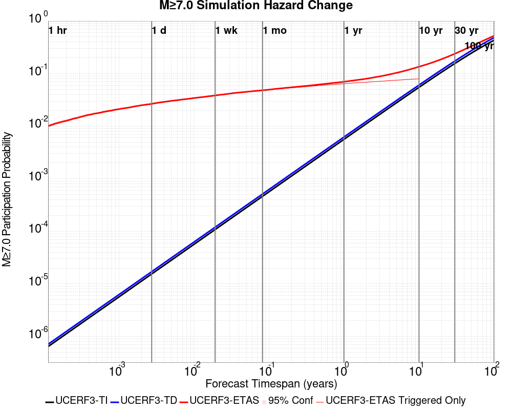
| Forecast Duration | UCERF3-ETAS [95% Conf] | UCERF3-ETAS Triggered Only | UCERF3-TD | UCERF3-ETAS/TD Gain | UCERF3-TI |
|---|---|---|---|---|---|
| 1 Hour | 0.010 [9.50E-3 - 0.011] | 0.010 | 7.12E-7 | 14206.59 | 6.43E-7 |
| 1 Day | 0.027 [0.026 - 0.028] | 0.027 | 1.71E-5 | 1557.72 | 1.54E-5 |
| 1 Week | 0.038 [0.037 - 0.040] | 0.038 | 1.20E-4 | 320.81 | 1.08E-4 |
| 1 Month | 0.048 [0.047 - 0.049] | 0.048 | 5.12E-4 | 93.87 | 4.63E-4 |
| 1 Year | 0.070 [0.069 - 0.072] | 0.064 | 6.22E-3 | 11.26 | 5.62E-3 |
| 10 Years | 0.135 [0.134 - 0.137] | 0.080 | 0.061 | 2.24 | 0.055 |
| 30 Years | 0.239 [0.238 - 0.240] * | * | 0.173 | 1.38 * | 0.156 |
| 100 Years | 0.524 [0.523 - 0.525] * | * | 0.483 | 1.09 * | 0.431 |
* forecast duration is longer than simulation length, only ETAS ruptures from the first 10 years are included

| Forecast Duration | UCERF3-ETAS [95% Conf] | UCERF3-ETAS Triggered Only | UCERF3-TD | UCERF3-ETAS/TD Gain | UCERF3-TI |
|---|---|---|---|---|---|
| 1 Hour | 3.00E-5 [7.76E-6 - 9.56E-5] | 3.00E-5 | 1.24E-8 | 2426.97 | 1.06E-8 |
| 1 Day | 9.03E-5 [4.42E-5 - 1.78E-4] | 9.00E-5 | 2.97E-7 | 304.25 | 2.54E-7 |
| 1 Week | 1.32E-4 [7.44E-5 - 2.31E-4] | 1.30E-4 | 2.08E-6 | 63.57 | 1.78E-6 |
| 1 Month | 1.79E-4 [1.11E-4 - 2.87E-4] | 1.70E-4 | 8.90E-6 | 20.09 | 7.63E-6 |
| 1 Year | 2.98E-4 [2.26E-4 - 4.11E-4] | 1.90E-4 | 1.08E-4 | 2.75 | 9.29E-5 |
| 10 Years | 1.36E-3 [1.27E-3 - 1.48E-3] | 2.60E-4 | 1.10E-3 | 1.24 | 9.29E-4 |
| 30 Years | 3.76E-3 [3.68E-3 - 3.89E-3] * | * | 3.50E-3 | 1.07 * | 2.78E-3 |
| 100 Years | 0.014 [0.014 - 0.014] * | * | 0.014 | 1.02 * | 9.25E-3 |
* forecast duration is longer than simulation length, only ETAS ruptures from the first 10 years are included


| Section Name | Strike, Dip, Rake | # Hypos In Poly | Max Mag w/ Hypo In Poly | # Surfs In Poly | Max Mag w/ Surf In Poly | Min Dist To Any (km) | Min Poly Dist To Any (km) | Min Dist To Largest (km) | Min Poly Dist To Largest (km) | Min Hypo Dist To Largest (km) | Min Hypo Poly Dist To Largest (km) |
|---|---|---|---|---|---|---|---|---|---|---|---|
| Airport Lake | 359, 50, -90 | 93 | 7.1 | 93 | 7.1 | 0.036 | 0.000 | 0.036 | 0.000 | 5.612 | 0.000 |
| Little Lake | 327, 90, 180 | 17 | 3.75 | 18 | 7.1 | 2.268 | 0.000 | 11.284 | 0.000 | 13.471 | 1.469 |
| Garlock (Central) | 71, 90, 0 | 2 | 2.76 | 3 | 7.1 | 5.600 | 0.000 | 5.600 | 0.000 | 22.766 | 10.797 |
| So Sierra Nevada | 2, 50, -90 | 0 | 0 | 4.248 | 4.233 | 4.248 | 4.233 | 16.191 | 15.188 | ||
| Tank Canyon | 189, 50, -90 | 0 | 0 | 9.015 | 9.011 | 9.015 | 9.011 | 17.039 | 16.895 | ||
| Blackwater | 323, 90, 180 | 0 | 0 | 14.394 | 8.726 | 14.394 | 8.726 | 29.622 | 27.613 |
These are map plots of individual catalogs from the simulations, selected as the closest catalog to each of the given percentiles in terms of total number of events.
| Duration | p0.0 %-ile | p25.0 %-ile | p50.0 %-ile | p75.0 %-ile | p90.0 %-ile | p95.0 %-ile | p97.5 %-ile | p98.0 %-ile | p99.0 %-ile | p99.5 %-ile | p99.9 %-ile | p99.999 %-ile |
|---|---|---|---|---|---|---|---|---|---|---|---|---|
| 1 Week | 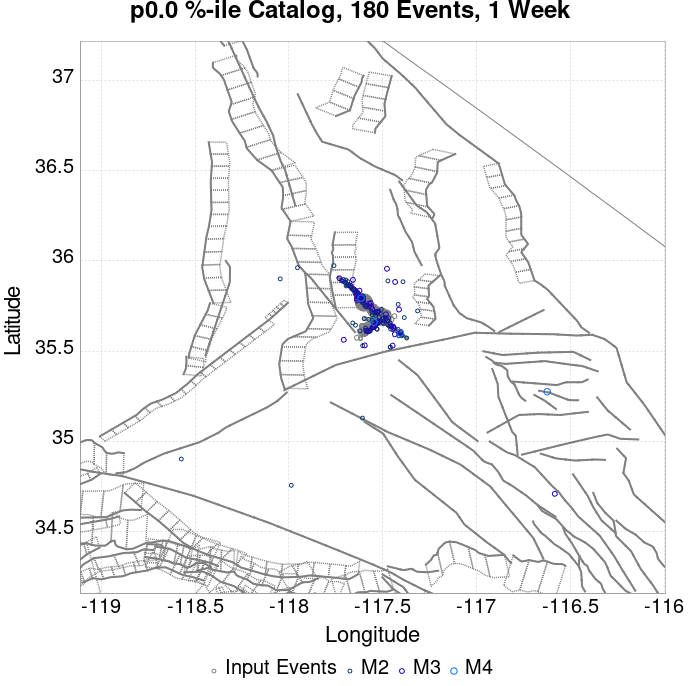 |  |  |  |  |  |  |  | 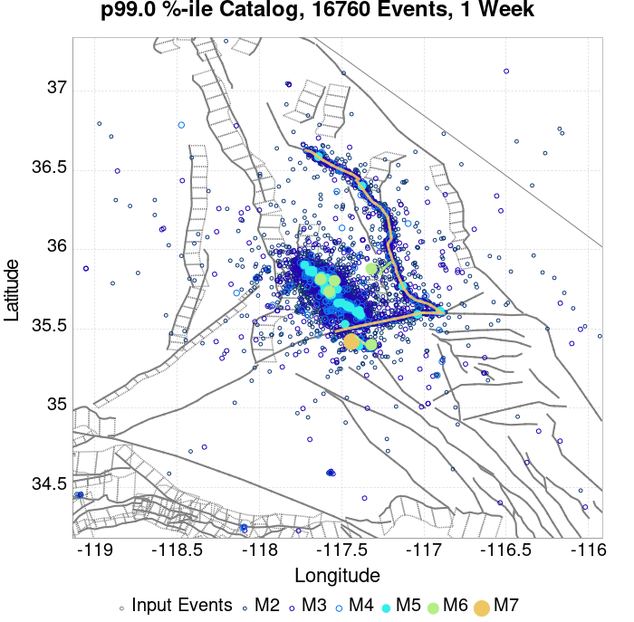 |  |  | |
| 1 Month |  |  |  |  |  |  |  |  | ||||
| 1 Year |  | 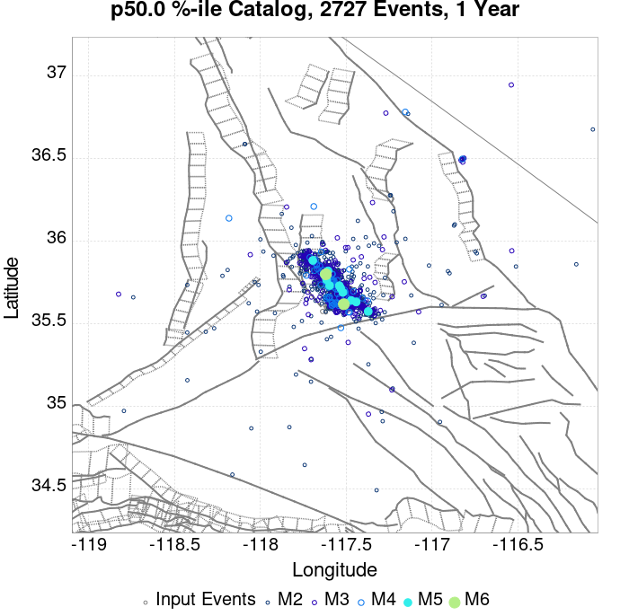 |  |  |  |  |  |  |  |  |  | |
| 10 Year |  |  |  |  |  |  |  |  |  |  |
These plots compare simulated sequences with data from ComCat. All plots only consider events with hypocenters inside the ComCat region defined in the JSON input file.
Last updated at 2019/10/29 19:13:23 UTC, 115.7 d after the simulation start time
| Incremental MND | Cumulative MND |
|---|---|
 |  |
The following plots compare simulation results with ComCat data above a magnitude threshold. Plots labeled as M≥Mc(t) use the time-dependent magnitude of completeness (Mc) defined in Helmstetter et al. (2006), which is plotted below. In the case of multiple M≥5 ruptures, either as input to the simulation or in the comparison data, the maximum calculated time-dependent Mc is used. This time-dependent Mc function is plotted below.

| M≥Mc(t) | M≥3.5 | M≥4 | M≥5 | M≥6 | M≥7 |
|---|---|---|---|---|---|
 |  |  |  |  |  |

| 1 Day | 1 Week | 1 Month | Current (115.7 Day) | |
|---|---|---|---|---|
| M≥Mc(t) |  |  | ||
| M≥3.5 |  |  |  | |
| M≥4 |  |  | ||
| M≥5 |  |  | ||
| M≥6 |  |  |  |  |
| M≥7 |  |  |  |  |
| M≥8 |  |  |  |  |
| 1 Day | 1 Week | 1 Month | Current (115.7 Day) | |
|---|---|---|---|---|
| M≥Mc(t) |  |  |  | |
| M≥3.5 |  |  |  |  |
| M≥4 |  |  | 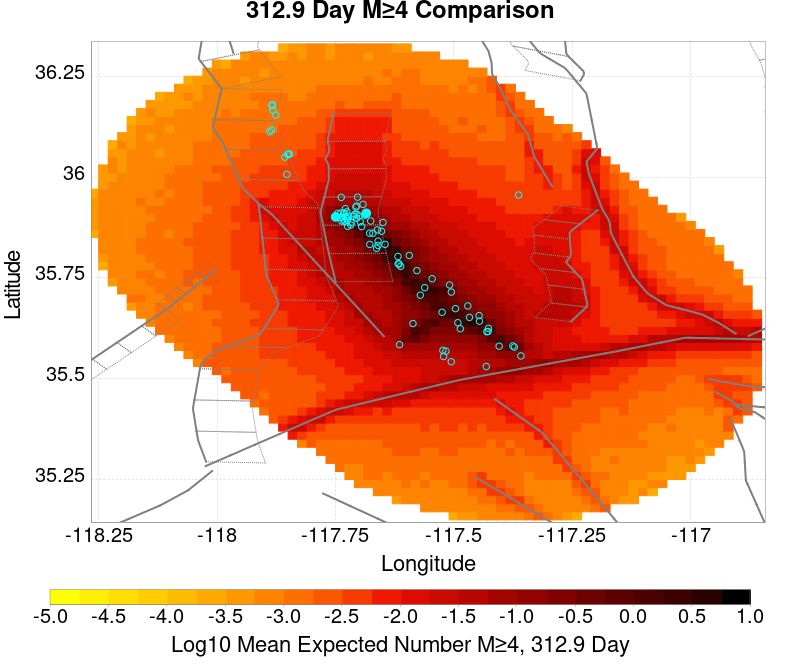 | |
| M≥5 |  | 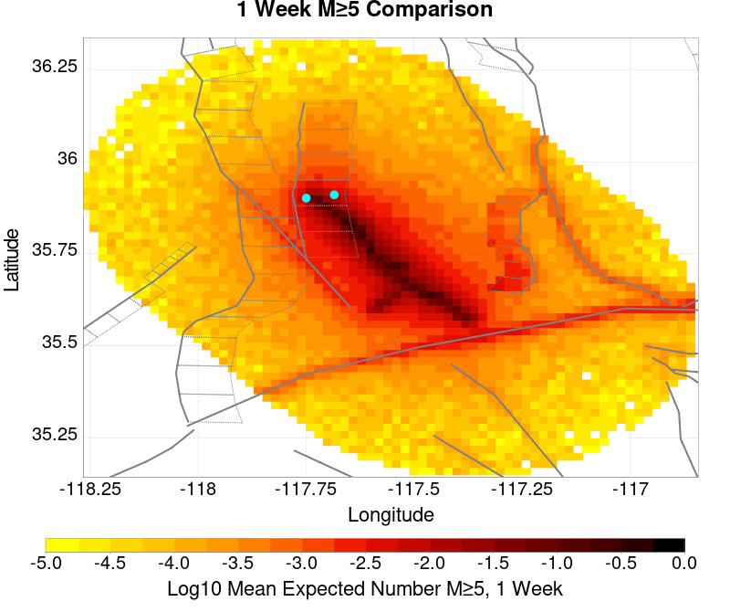 |  |  |
| M≥6 |  |  |  |  |
| M≥7 | 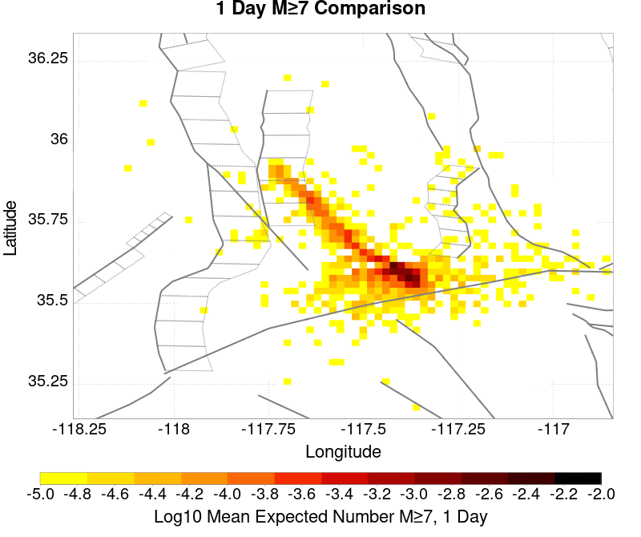 |  |  |  |
| M≥8 |  |  |
| M≥Mc(t) | M≥3.5 | M≥4 | M≥5 | M≥6 | M≥7 | M≥8 |
|---|---|---|---|---|---|---|
| 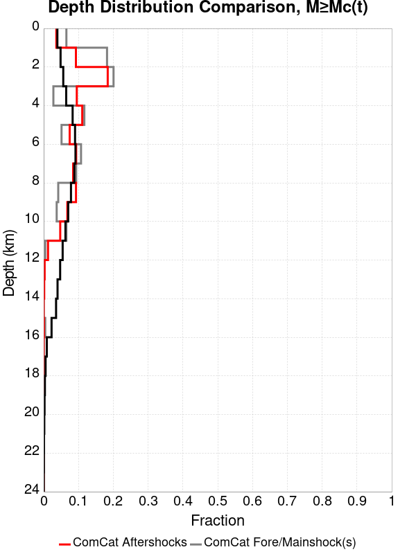 | 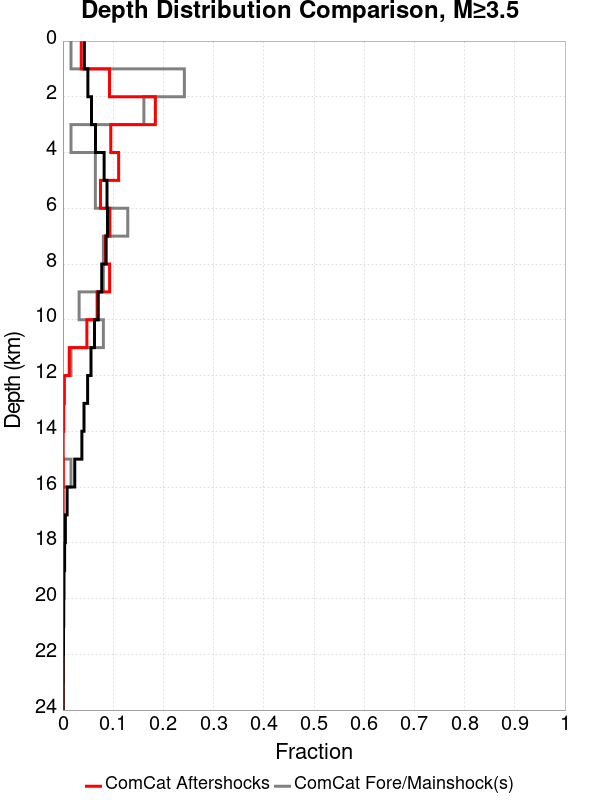 |  |  |  |  | 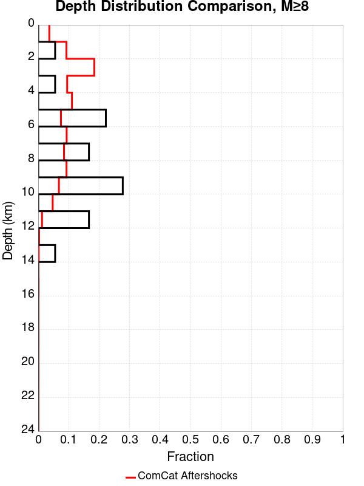 |
| Min Mag | 1 yr Triggered Ruptures (no spontaneous) | 10 yr Triggered Ruptures (no spontaneous) | 10 yr Triggered Ruptures (primary aftershocks only) |
|---|---|---|---|
| All Supra. Seis. |  |  |  |
| M≥6.5 |  |  |  |
| M≥7 |  |  |  |
| M≥7.5 |  |  | 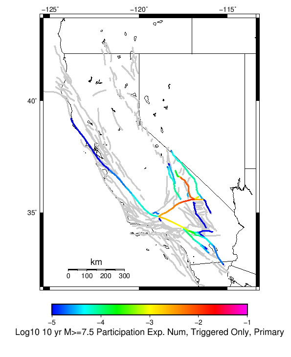 |
| M≥8 |  |  | 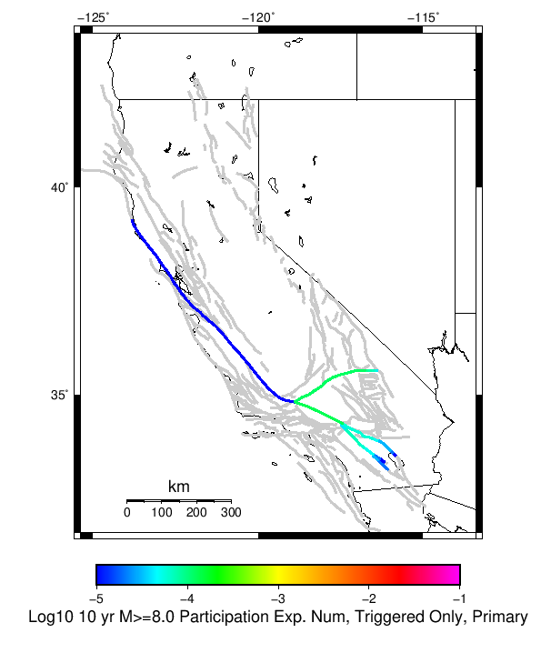 |
First 10 of 225 with matching ruptures shown
| Parent Name | Triggered 10 Year Mean Count | Triggered 1 Day Prob | Triggered 1 Week Prob | Triggered 1 Month Prob | Triggered 1 Year Prob | Triggered 10 Year Prob | Triggered 10 Year Primary Mean Count |
|---|---|---|---|---|---|---|---|
| Garlock (Central) | 0.15208 | 0.05129 | 0.07272 | 0.08867 | 0.11714 | 0.14258 | 0.08342 |
| Tank Canyon | 0.12741 | 0.02588 | 0.04028 | 0.05299 | 0.07953 | 0.10633 | 0.03478 |
| Little Lake | 0.07395 | 0.0248 | 0.0355 | 0.04346 | 0.05717 | 0.06986 | 0.04204 |
| Airport Lake | 0.05931 | 0.02225 | 0.03176 | 0.03837 | 0.04896 | 0.05885 | 0.03907 |
| Owl Lake | 0.04672 | 0.01084 | 0.01675 | 0.02169 | 0.03118 | 0.04093 | 0.01244 |
| Panamint Valley | 0.03468 | 0.00905 | 0.01369 | 0.01768 | 0.0255 | 0.03347 | 0.01215 |
| Garlock (East) | 0.03087 | 0.0073 | 0.0111 | 0.01458 | 0.021 | 0.02771 | 0.00905 |
| Hunter Mountain-Saline Valley | 0.01597 | 0.0049 | 0.00718 | 0.00905 | 0.01231 | 0.01571 | 0.0073 |
| Blackwater | 0.01433 | 0.00275 | 0.00447 | 0.00613 | 0.00988 | 0.01366 | 0.0035 |
| Ash Hill | 0.0137 | 0.00224 | 0.00396 | 0.00542 | 0.00881 | 0.01259 | 0.00203 |
First 10 of 182 with matching ruptures shown
| Parent Name | Triggered 10 Year Mean Count | Triggered 1 Day Prob | Triggered 1 Week Prob | Triggered 1 Month Prob | Triggered 1 Year Prob | Triggered 10 Year Prob | Triggered 10 Year Primary Mean Count |
|---|---|---|---|---|---|---|---|
| Garlock (Central) | 0.06397 | 0.02169 | 0.03079 | 0.03777 | 0.05066 | 0.06298 | 0.03344 |
| Little Lake | 0.04487 | 0.0157 | 0.0228 | 0.02764 | 0.03577 | 0.04369 | 0.02707 |
| Airport Lake | 0.04469 | 0.01711 | 0.02412 | 0.02918 | 0.03702 | 0.04455 | 0.02957 |
| Panamint Valley | 0.03197 | 0.00861 | 0.01294 | 0.0166 | 0.02375 | 0.031 | 0.0119 |
| Owl Lake | 0.02576 | 0.00783 | 0.01152 | 0.01447 | 0.0201 | 0.02564 | 0.01103 |
| Garlock (East) | 0.02145 | 0.00632 | 0.00902 | 0.01147 | 0.01584 | 0.02029 | 0.00858 |
| Hunter Mountain-Saline Valley | 0.01566 | 0.00485 | 0.00708 | 0.0089 | 0.0121 | 0.01545 | 0.00723 |
| Tank Canyon | 0.01352 | 0.00279 | 0.00439 | 0.00608 | 0.00948 | 0.01345 | 0.00358 |
| Garlock (West) | 0.0106 | 0.00367 | 0.00509 | 0.00649 | 0.00838 | 0.01058 | 0.0054 |
| So Sierra Nevada | 0.00562 | 9.9E-4 | 0.00185 | 0.0025 | 0.0041 | 0.00556 | 8.7E-4 |
First 10 of 129 with matching ruptures shown
| Parent Name | Triggered 10 Year Mean Count | Triggered 1 Day Prob | Triggered 1 Week Prob | Triggered 1 Month Prob | Triggered 1 Year Prob | Triggered 10 Year Prob | Triggered 10 Year Primary Mean Count |
|---|---|---|---|---|---|---|---|
| Garlock (Central) | 0.05711 | 0.01944 | 0.02762 | 0.03398 | 0.0455 | 0.05649 | 0.02981 |
| Panamint Valley | 0.02171 | 0.00669 | 0.00979 | 0.01234 | 0.01701 | 0.02161 | 0.00997 |
| Owl Lake | 0.01976 | 0.00671 | 0.00959 | 0.01173 | 0.01593 | 0.01976 | 0.01059 |
| Garlock (East) | 0.01607 | 0.00562 | 0.00789 | 0.00972 | 0.01286 | 0.01596 | 0.00818 |
| Hunter Mountain-Saline Valley | 0.0151 | 0.00475 | 0.00694 | 0.00871 | 0.01182 | 0.01508 | 0.00712 |
| Garlock (West) | 0.01047 | 0.00364 | 0.00506 | 0.00643 | 0.00828 | 0.01046 | 0.00537 |
| Little Lake | 0.00994 | 0.00371 | 0.00534 | 0.00651 | 0.0083 | 0.00994 | 0.0068 |
| Airport Lake | 0.00933 | 0.00355 | 0.00507 | 0.00619 | 0.00787 | 0.00933 | 0.00649 |
| San Andreas (Mojave N) | 0.00452 | 0.00153 | 0.00218 | 0.00274 | 0.00357 | 0.00445 | 0.00216 |
| San Andreas (Mojave S) | 0.00342 | 0.00113 | 0.00157 | 0.00204 | 0.00273 | 0.00342 | 0.00164 |
First 10 of 70 with matching ruptures shown
| Parent Name | Triggered 10 Year Mean Count | Triggered 1 Day Prob | Triggered 1 Week Prob | Triggered 1 Month Prob | Triggered 1 Year Prob | Triggered 10 Year Prob | Triggered 10 Year Primary Mean Count |
|---|---|---|---|---|---|---|---|
| Garlock (Central) | 0.02279 | 0.00772 | 0.01095 | 0.01374 | 0.01807 | 0.02273 | 0.01161 |
| Panamint Valley | 0.01477 | 0.00471 | 0.00684 | 0.00859 | 0.01163 | 0.01477 | 0.00705 |
| Hunter Mountain-Saline Valley | 0.01475 | 0.0047 | 0.00683 | 0.00858 | 0.01162 | 0.01475 | 0.00705 |
| Garlock (West) | 0.00923 | 0.00322 | 0.00451 | 0.00578 | 0.00737 | 0.00923 | 0.00474 |
| Garlock (East) | 0.0061 | 0.00226 | 0.00317 | 0.00395 | 0.00485 | 0.0061 | 0.0032 |
| San Andreas (Mojave N) | 0.00446 | 0.00152 | 0.00217 | 0.00273 | 0.00355 | 0.00441 | 0.00215 |
| San Andreas (Mojave S) | 0.00333 | 0.00113 | 0.00156 | 0.00202 | 0.00269 | 0.00333 | 0.00163 |
| San Andreas (San Bernardino N) | 0.00193 | 6.1E-4 | 8.3E-4 | 0.00111 | 0.0015 | 0.00193 | 8.8E-4 |
| Owl Lake | 0.00183 | 5.4E-4 | 8.0E-4 | 0.00112 | 0.00147 | 0.00183 | 9.7E-4 |
| San Andreas (San Bernardino S) | 8.0E-4 | 1.9E-4 | 2.6E-4 | 3.9E-4 | 6.0E-4 | 8.0E-4 | 2.9E-4 |
First 10 of 34 with matching ruptures shown
| Parent Name | Triggered 10 Year Mean Count | Triggered 1 Day Prob | Triggered 1 Week Prob | Triggered 1 Month Prob | Triggered 1 Year Prob | Triggered 10 Year Prob | Triggered 10 Year Primary Mean Count |
|---|---|---|---|---|---|---|---|
| San Andreas (Mojave N) | 3.6E-4 | 1.1E-4 | 1.6E-4 | 2.1E-4 | 2.5E-4 | 3.6E-4 | 1.3E-4 |
| San Andreas (Mojave S) | 3.6E-4 | 1.1E-4 | 1.6E-4 | 2.1E-4 | 2.5E-4 | 3.6E-4 | 1.3E-4 |
| San Andreas (San Bernardino N) | 3.6E-4 | 1.1E-4 | 1.6E-4 | 2.1E-4 | 2.5E-4 | 3.6E-4 | 1.3E-4 |
| Garlock (Central) | 2.6E-4 | 9.0E-5 | 1.3E-4 | 1.7E-4 | 1.9E-4 | 2.6E-4 | 1.2E-4 |
| Garlock (West) | 2.6E-4 | 9.0E-5 | 1.3E-4 | 1.7E-4 | 1.9E-4 | 2.6E-4 | 1.2E-4 |
| Garlock (East) | 2.4E-4 | 8.0E-5 | 1.2E-4 | 1.5E-4 | 1.7E-4 | 2.4E-4 | 1.2E-4 |
| San Andreas (San Bernardino S) | 2.0E-4 | 4.0E-5 | 7.0E-5 | 9.0E-5 | 1.2E-4 | 2.0E-4 | 6.0E-5 |
| San Andreas (San Gorgonio Pass-Garnet HIll) | 1.8E-4 | 4.0E-5 | 6.0E-5 | 8.0E-5 | 1.1E-4 | 1.8E-4 | 6.0E-5 |
| San Andreas (Coachella) rev | 1.5E-4 | 2.0E-5 | 4.0E-5 | 5.0E-5 | 9.0E-5 | 1.5E-4 | 3.0E-5 |
| San Jacinto (San Bernardino) | 1.4E-4 | 6.0E-5 | 8.0E-5 | 1.1E-4 | 1.1E-4 | 1.4E-4 | 7.0E-5 |
The first 5 sections (sorted by trigger rate) are plotted below. All fault MPDs are available here
| 1 Week | 1 Month | 1 Year | 10 Year |
|---|---|---|---|
 |  |  |  |
 |  |  |  |
 |  |  |  |
 |  |  |  |
 |  |  |
| Min Mag | Triggered Ruptures (no spontaneous) | Triggered Ruptures (primary aftershocks only) |
|---|---|---|
| M≥2.5 |  |  |
| M≥5 |  |  |
| M≥6 |  | |
| M≥7 |  |  |
{
"numSimulations": 100000,
"duration": 10.0,
"startTimeMillis": 1562383194040,
"includeSpontaneous": false,
"randomSeed": 1571705251066,
"binaryOutput": true,
"binaryOutputFilters": [
{
"prefix": "results_complete",
"descendantsOnly": false
},
{
"prefix": "results_m5_preserve_chain",
"minMag": 5.0,
"preserveChainBelowMag": true,
"descendantsOnly": false
}
],
"forceRecalc": false,
"simulationName": "ComCat M7.1 (ci38457511), ShakeMap Surfaces, kCOV\u003d1.16",
"numRetries": 3,
"outputDir": "/home/scec-02/kmilner/ucerf3/etas_sim/2019_10_21-ComCatM7p1_ci38457511_ShakeMapSurfaces_kCOV1p16",
"treatTriggerCatalogAsSpontaneous": false,
"triggerRuptures": [
"omitted due to length, see original input file"
],
"cacheDir": "/home/scec-02/kmilner/ucerf3/ucerf3-etas-launcher/inputs/cache_fm3p1_ba",
"fssFile": "/home/scec-02/kmilner/ucerf3/ucerf3-etas-launcher/inputs/2013_05_10-ucerf3p3-production-10runs_COMPOUND_SOL_FM3_1_SpatSeisU3_MEAN_BRANCH_AVG_SOL.zip",
"probModel": "FULL_TD",
"applySubSeisForSupraNucl": true,
"totRateScaleFactor": 1.14,
"gridSeisCorr": true,
"timeIndependentERF": false,
"griddedOnly": false,
"imposeGR": false,
"includeIndirectTriggering": true,
"gridSeisDiscr": 0.1,
"catalogCompletenessModel": "RELAXED",
"etas_k_cov": 1.16,
"configCommand": "u3etas_comcat_event_config_builder.sh --event-id ci38457511 --mag-complete 3.5 --num-simulations 100000 --days-before 7 --etas-k-cov 1.16 --finite-surf-shakemap --finite-surf-shakemap-min-mag 5 --hpc-site USC_HPC --nodes 36 --hours 24 --queue scec",
"configTime": 1571705251066,
"comcatMetadata": {
"region": {
"border": [
{
"latitude": 35.15123745324938,
"longitude": -117.46198765392752
},
{
"latitude": 35.170513097218205,
"longitude": -117.55046477274733
},
{
"latitude": 35.201997575622634,
"longitude": -117.63356287896195
},
{
"latitude": 35.24474776584818,
"longitude": -117.70878534540662
},
{
"latitude": 35.2893890362986,
"longitude": -117.76387551603122
},
{
"latitude": 35.288830898189985,
"longitude": -117.76465036296011
},
{
"latitude": 35.62116745212862,
"longitude": -118.13026990137416
},
{
"latitude": 35.621789874646055,
"longitude": -118.12940866580139
},
{
"latitude": 35.621789874646055,
"longitude": -118.12940866580136
},
{
"latitude": 35.63100857737423,
"longitude": -118.14083341711117
},
{
"latitude": 35.69213881200874,
"longitude": -118.19401186444136
},
{
"latitude": 35.759827796433385,
"longitude": -118.23338865654299
},
{
"latitude": 35.8320329014668,
"longitude": -118.25773927868946
},
{
"latitude": 35.906569563076914,
"longitude": -118.26628547708222
},
{
"latitude": 35.9811764992231,
"longitude": -118.25872343341653
},
{
"latitude": 36.05358395358725,
"longitude": -118.23523828089384
},
{
"latitude": 36.12158296055357,
"longitude": -118.19650389473806
},
{
"latitude": 36.18309350302806,
"longitude": -118.14366730262441
},
{
"latitude": 36.23622937613509,
"longitude": -118.07831757407638
},
{
"latitude": 36.279357589115186,
"longitude": -118.00243964650828
},
{
"latitude": 36.31115024550475,
"longitude": -117.91835419890715
},
{
"latitude": 36.33062704347584,
"longitude": -117.82864534929934
},
{
"latitude": 36.337186832826475,
"longitude": -117.7360785775
},
{
"latitude": 36.33062704347584,
"longitude": -117.64351180570065
},
{
"latitude": 36.31115024550475,
"longitude": -117.55380295609284
},
{
"latitude": 36.279357589115186,
"longitude": -117.46971750849171
},
{
"latitude": 36.23622937613509,
"longitude": -117.39383958092363
},
{
"latitude": 36.19237301765921,
"longitude": -117.33990236386252
},
{
"latitude": 36.19237301765921,
"longitude": -117.3399023638625
},
{
"latitude": 36.19300476664728,
"longitude": -117.33902822340912
},
{
"latitude": 35.858277657147454,
"longitude": -116.97410396317103
},
{
"latitude": 35.85771127553969,
"longitude": -116.97489025431044
},
{
"latitude": 35.849566414597014,
"longitude": -116.96491461360324
},
{
"latitude": 35.78805819220281,
"longitude": -116.9122967694479
},
{
"latitude": 35.72006106557635,
"longitude": -116.87372034968973
},
{
"latitude": 35.64765482528862,
"longitude": -116.85032807444419
},
{
"latitude": 35.57304829206068,
"longitude": -116.8427916482061
},
{
"latitude": 35.49851117585832,
"longitude": -116.8512961557198
},
{
"latitude": 35.42630481575459,
"longitude": -116.87553976530553
},
{
"latitude": 35.35861392859174,
"longitude": -116.91474809853695
},
{
"latitude": 35.29748137319737,
"longitude": -116.96770221389164
},
{
"latitude": 35.24474776584818,
"longitude": -117.03277884359336
},
{
"latitude": 35.201997575622634,
"longitude": -117.10800131003803
},
{
"latitude": 35.170513097218205,
"longitude": -117.19109941625265
},
{
"latitude": 35.15123745324938,
"longitude": -117.27957653507247
},
{
"latitude": 35.14474752487352,
"longitude": -117.3707820945
}
]
},
"eventID": "ci38457511",
"minDepth": -10.0,
"maxDepth": 24.0,
"minMag": 2.5,
"startTime": 1561778393040,
"endTime": 1562383193040,
"magComplete": 3.5
}
}